×

Bu Adaya Aşık Olacaksınız: Koh Phangan
Yüzmeden partilere, sabah koşularından yoga ve ritüellere, en güzel kafelerden unutulmaz lezzetlere kadar bir adada her şey mi olur? Evet, olur. Koh Phangan tam olarak böyle bir ada!
Koh Phangan Seyahat Rehberi
Koh Phangan, Tayland Körfezi’nde yer alan ve geldiğiniz anda ada moduna
sokan yerlerden biri. Uzun uzun plajları, bolca palmiyesi, küçük koyları ve gün batımlarıyla
keşfetmesi inanılmaz keyifli. Adanın her tarafı da birbirinden farklı. Bazı yerlerde
sakin sakin denize girip dinlenirken, bazı yerlerde müzik ve kalabalıkla karşılaşıyorsunuz.
Koh Phangan denince tabii ki akla bir de parti tarafı geliyor. Ada, özellikle
Full Moon Party ile dünyaca ünlü olsa da aslında olay sadece dolunay gecesinden
ibaret değil. Haftanın farklı günlerinde düzenlenen beach party’ler, jungle party’ler ve
çeşitli etkinlikler sayesinde adada neredeyse her akşam farklı bir atmosfer oluyor.
Güzel olan şu ki, tüm bu hareketliliğe rağmen ada tamamen parti adası gibi hissettirmiyor.
Gündüzleri sakin koylarda denize girebilir, gün batımını izleyebilir; akşam olunca isterseniz
müziğin ve kalabalığın arasına karışabilirsiniz. Bence Koh Phangan’ı özel yapan şeylerden biri
de bu denge.
Koh Phangan’ın en sevdiğim tarafı da bu oldu; tek bir tatil şekline
bağlı kalmak zorunda değilsiniz. Bir gününüzü denize girerek, ertesi günü motorla ada
keşfederek, başka bir akşamı gün batımını izleyerek ya da dans ederek geçirebilirsiniz.
Para Birimi ve Fiyatlar
Tayland’ın resmi para birimi Baht (THB)’dir ve çoğu yerde nakit veya kredi kartıyla
ödeme
yapılabiliyor. Bankamatiklerden para çekerken ise işlem başına komisyon alınıyor. Bu ücret,
kullandığınız bankaya ve karta göre değişiklik gösterebiliyor.
[Tayland’da Dikkat Etmeniz Gerekenler] bölümünü mutlaka okuyun.
2025 itibarıyla ortalama kurlar yaklaşık olarak:
1 Tayland Baht ≈ 1,29 TL (yaklaşık değer)
1 USD ≈ 33-36 THB civarındadır.
Koh Phangan’da yeme-içme, konaklama ve günlük harcamalar için her bütçeye uygun seçenek
bulmak mümkün. Gece pazarlarında ve yerel restoranlarda uygun fiyatlı
yemekler bulabilirken, deniz manzaralı restoranlar ve popüler beach barlarda fiyatlar biraz
daha yükseliyor. Genel olarak ada, bütçenize göre rahatça şekillendirebileceğiniz bir yer.
Koh Phangan'a Ne Zaman Gidilir?
Koh Phangan’ı ziyaret etmek için en ideal dönem genellikle Aralık – Nisan
arası. Hava daha güneşli, yağışlar daha az ve deniz çoğunlukla sakin oluyor.
Mayıs – Eylül arasında kısa süreli yağmurlar görülebilir ama genellikle
adayı keşfetmeye engel olmuyor. Ekim – Kasım ise yağışların en yoğun olduğu
dönem, bu yüzden daha kuru bir tatil istiyorsanız bu ayları tercih etmemenizi öneririm.
Koh Phangan’da Yeme - İçme
Koh Phangan’da yemek konusunda seçenek sıkıntısı çekmiyorsunuz. Sokak tezgahlarında hızlıca bir şeyler yiyebilir, küçük Tay restoranlarında yerel yemekleri deneyebilir ya da sahil kenarında uzun uzun oturabilirsiniz. Gece pazarları da özellikle farklı Tay yemeklerini denemek için güzel bir alternatif ve çok lezzetli.
Koh Phangan’a Ulaşım
Koh Phangan’a direkt uçuş bulunmadığı için adaya ulaşım genellikle feribot
ile sağlanıyor. En yaygın seçenekler Koh Samui veya
Surat Thani üzerinden adaya geçmek. Koh Samui’den feribot yolculuğu yaklaşık
30–45 dakika sürerken, Surat Thani tarafından yolculuk
2–2,5 saat civarında sürüyor.
Ada içi ulaşım için ise adada en pratik yöntem
motor kiralamak. Ada yolları genellikle iyi durumda ve
motor ile plajlar, kafeler, gece pazarları ve yoga merkezleri gibi noktalar
kolayca ulaşılabilir. Motor kiralamayı düşünüyorsanız,
Tayland'da motor kiralama rehberime
göz atabilirsiniz.
Motor kullanmak istemeyenler içinse taksi ve adada sıkça kullanılan küçük servisler
var. Özellikle birkaç kişi seyahat ediyorsanız bu seçenekler de işinize yarayabilir.
Koh Phangan’da Nerede Kalınır?
Koh Phangan’da nerede kalacağınız biraz nasıl bir tatil istediğinize bağlı. Ada büyük
olduğu için bölge seçimi önemli. Sakinlik, yoga ve wellness merkezlerine yakın olmak
istiyorsanız Sri Thanu tarafı güzel bir seçenek. Bölgede küçük kafeler,
restoranlar ve daha sakin plajlar bulunuyor.
Daha hareketli bir ortam istiyorsanız Haad Rin tarafına bakabilirsiniz.
Özellikle Full Moon Party döneminde ada oldukça kalabalıklaştığı için
burada konaklamayı düşünüyorsanız yerinizi önceden ayırtmanız iyi olur.
Bunların dışında adanın farklı bölgelerinde bungalovlardan butik otellere ve resortlara
kadar pek çok seçenek var. Bence Koh Phangan’da konaklama seçerken otelden çok, adanın hangi
tarafında vakit geçirmek istediğinize karar vermek önemli, aklınızda bulusunsun.
Seyahatinizi Planlayın(Kullanışlı Bağlantılar)
Seyahatlerimizi planlarken kullandığımız araçlara göz atın.
Burada yer alan bağlantılar bağlı kuruluş (affiliate) linkleridir.
Bu linkleri kullanarak blogumuzu sürdürmemize yardımcı oluyorsunuz.
Sizin için herhangi bir ek maliyet oluşturmaz, ancak bizim misyonumuzda büyük fark yaratabilir.
🌿
🏨Size en uygun oteli bulun. Rezervasyonlarınızı Booking.com üzerinden yapabilirsiniz.
✈️En uygun uçuş fiyatlarını Skyscanner.com adresinden bulabilirsiniz.
🎟️Çevrim içi tur ve etkinlik rezervasyonları için GetYourGuide.com kullanın.
🏕️Yürüyüş, kamp, bisiklet ve daha fazlası için Decathlon.com geniş bir yelpaze sunuyor.
Koh Phangan Gezi Haritası
Koh Phangan’ı keşfetmenin en güzel yolu adanın farklı köşelerine uğrayarak kendi rotanızı oluşturmak. Hazırladığım haritada en sevdiğimiz plajları, gün batımı noktalarını, kafeleri ve keşiflerimi bulabilirsiniz. İsterseniz bu noktaları takip ederek kendi Koh Phangan rotanızı kolayca planlayabilirsiniz. Hadi bakalım!
Gezilecek Yerler
1 Zen Beach
2 Sunrise Beach (Haad Rin)
3 Sunset Beach (Haad Rin)
4 Bottle Beach
5 Mae Haad Beach
6 Nude Beach
7 Secret Beach
8 Hin Kong Beach
9 Paradise Waterfall
10 Phaeng Waterfall
11 Dom Sila Viewpoint
12 Than Sadet Waterfall
13 Khao Ra
14 Xantiva Health Club
15 Orion Healing Centre
16 Koh Phangan Night Market
17 Haad Rin Walking Street
18 Amsterdam Bar
19 LightHouse
Yeme İçme
1 Blue Ocean Coffee Restaurant
2 Cafe 2401 and Guesthouse
3 Common Grounds Coffee
4 Bubba's Coffee
5 Top Rock Bar
Koh Phangan Muhteşem Plajları
Birbirinden keyifli, eğlenceli ve yeri geldiğinde huzur dolu plajlarını mutlaka keşfetmenizi istiyorum. Gün doğumunda denizin üzerinde beliren ilk ışıkları ve gün batımında gökyüzünü turuncuya boyayan manzaralarıyla ada sizi kendine hayran bırakacak.
1. Zen Beach
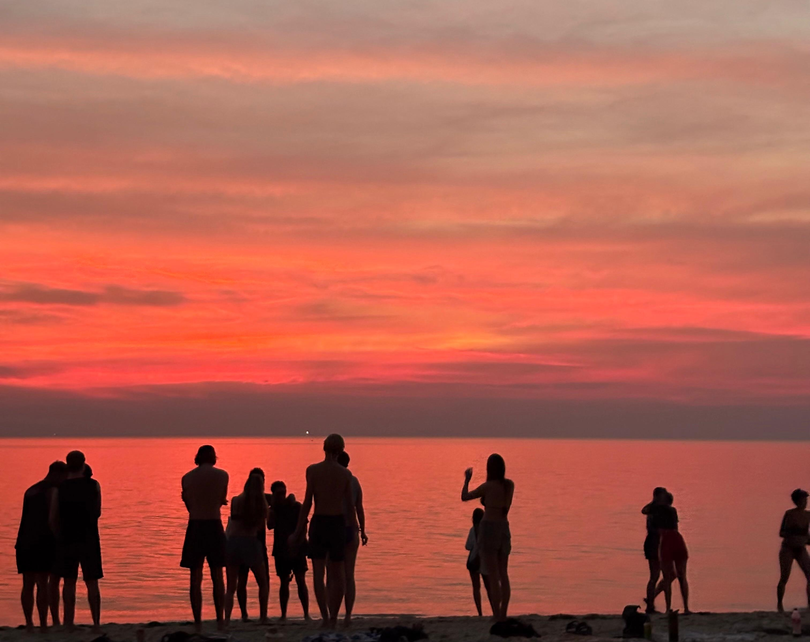
Benim 1 numaralı plajımız olan Zen Beach, Koh Phangan’ın en özgün ve ruhu olan plajlarından biri. Adanın kuzeybatısında, Srithanu bölgesine yakın konumda bulunuyor ve özellikle gün batımı saatlerinde bambaşka bir atmosfere bürünüyor.
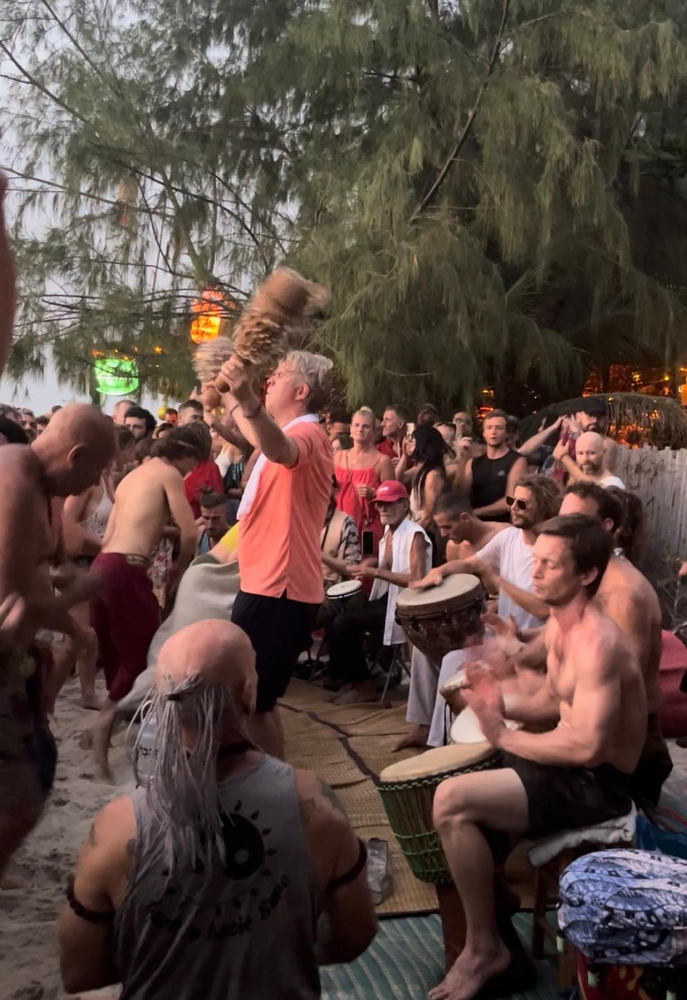
Özellikle hafta sonlarında gün batımı etkinlikleri düzenleniyor. Müzik başladığında insanlar
sahilde toplanıyor, kimisi dans ediyor, kimisi kumlara oturup gün batımını izliyor. Bazen
DJ performansları, davul çemberleri veya küçük gösteriler de oluyor. Ortam oldukça rahat;
kimse kimseyi umursamadan kendi halinde eğleniyor.
Srithanu’nun yoga ve wellness kültürü nedeniyle burada meditasyon yapan veya yoga pratiği
gerçekleştiren insanlara da sıkça rastlayabilirsiniz. Yani burası klasik anlamda bir parti
plajından biraz farklı. Müzik, gün batımı ve sakin ada havası bir arada.
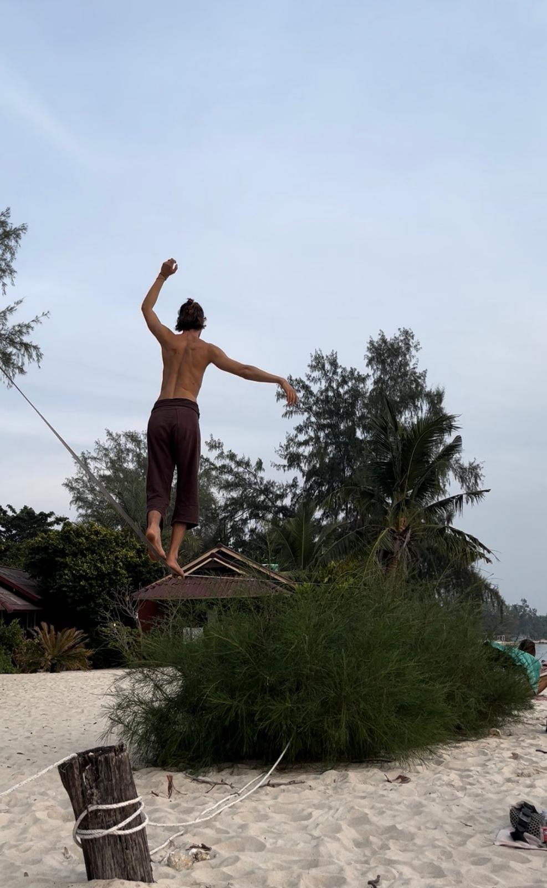
Zen Beach tam olarak arada bir yerde: Full Moon tarzı çılgın bir parti yok ama müzik, dans ve
topluluk enerjisi hep hissediliyor. Daha bilinçli, özgür ruhlu ve alternatif bir ortam
düşünebilirsiniz.
Plajda küçük bir beach bar da bulunuyor. Atıştırmalıklar, yemekler, taze meyve suları,
smoothie’ler ve soğuk içecekler bulabilirsiniz. Gün batımını beklerken bir şeyler içip
sahilde oturmak için gayet keyifli.
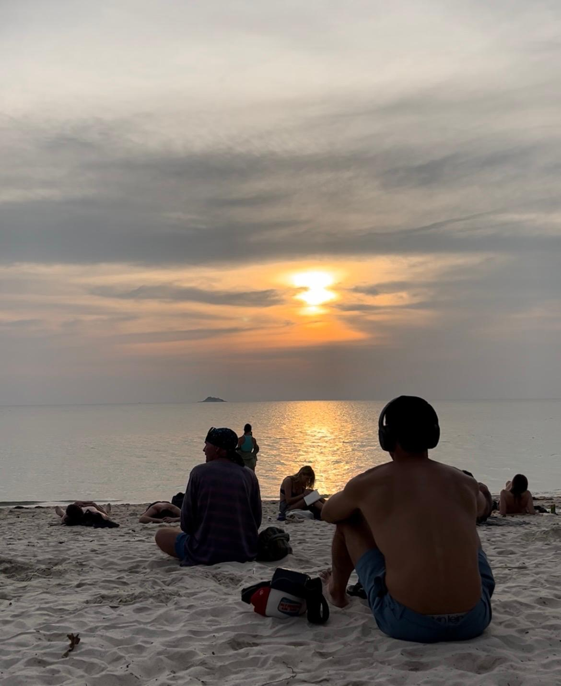
Ve size küçük bir uyarı: Eğer motorla gittiyseniz, bıraktığınız yeri mutlaka aklınızda tutun veya fotoğrafını çekin. Öğlen saatlerinde oldukça sakin görünen otopark, akşam olduğunda yüzlerce motorla doluyor. Ben ilk gittiğimde bunu düşünmediğim için çıkışta yaklaşık 1 saat motorumu aradım. 😄2. Haad Rin
Haad Rin ikiye ayrılıyor:Sunrise Beach (Haad Rin Nok) → Doğuya bakan, Full Moon Party’nin olduğu taraf
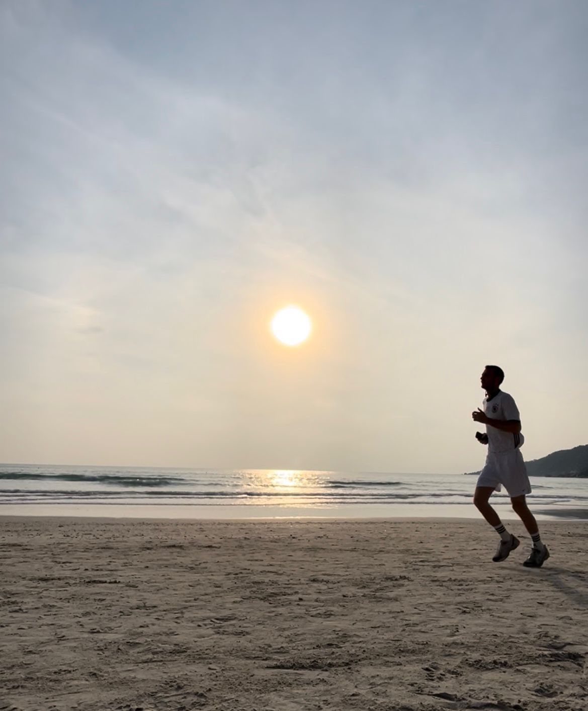
Haad Rin’in doğuya bakan tarafı olan Sunrise Beach, Koh Phangan’ın en
bilinen plajlarından biri. Burası aynı zamanda dünyaca ünlü Full Moon Party’nin
yapıldığı yer. Ama sadece parti döneminde gidilecek bir plaj değil; özellikle sabah saatlerinde
oldukça sakin oluyor.
Adından da anlaşıldığı gibi burası gün doğumunu izlemek için güzel noktalardan
biri.
Uzun ve geniş sahili sayesinde sabah yürüyüşü veya koşu yapmak da oldukça keyifli. Ben de
kaldığım süre boyunca sabahları burada düşük tempolu koşularımı yaptım. Kalabalık henüz
uyanmamışken sahilde koşun ve sonrasında denize girerek güne başlamayın mutlaka bir gün.
Deniz tamamen kum ve sabah saatlerinde genellikle daha sakin oluyor. Gün ilerledikçe plaj yavaş
yavaş hareketleniyor. Sahil boyunca şezlonglu beach barlar, restoranlar ve kafeler de var. Böylece
gün boyu plajda takılıp, denize girip, acıktıkça bir şeyler yiyerek keyfinize
bakabilirsiniz.
Full Moon Party döneminde ise buranın havası tamamen değişiyor. Sahil, büyük bir açık hava partisine dönüşüyor. Eğer özellikle parti için gelmiyorsanız, seyahat tarihinizi Full Moon Party tarihine denk getirmemeye dikkat etmenizi öneririm. Güncel parti tarihlerini kontrol etmek ve parti hakkında daha fazla bilgi almak için buraya göz atabilirsiniz.
Sunset Beach (Haad Rin Nai) → Güneybatıya / güneye bakan, daha sakin taraf
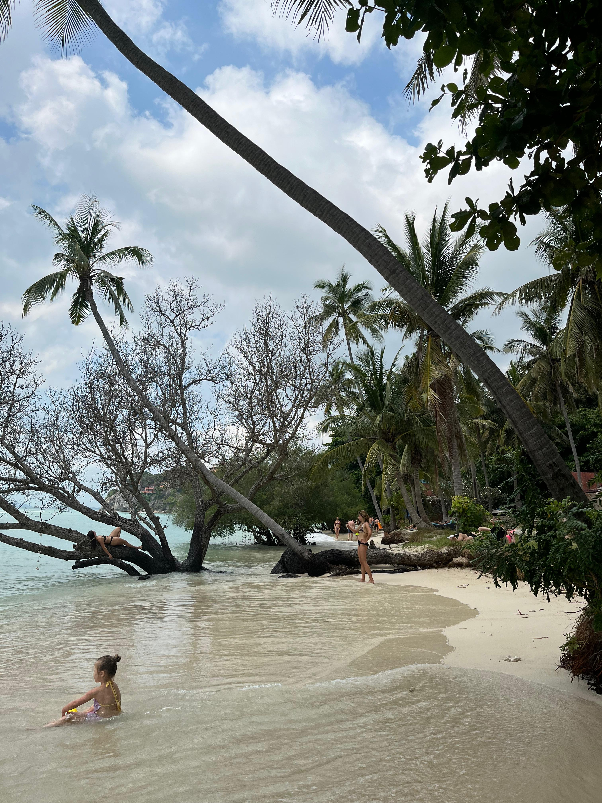
Haad Rin’in Sunset Beach tarafı, adanın benim en sevdiğim plajlarından biri oldu. Haad Rin denince çoğu kişinin aklına Full Moon Party geliyor ama partinin yapıldığı taraf Sunrise Beach. Buradan biraz uzaklaşıp Sunset Beach’e geçtiğinizde ise ortam tamamen değişiyor. Çok daha sakin, sessiz ve rahat bir plajla karşılaşıyorsunuz.
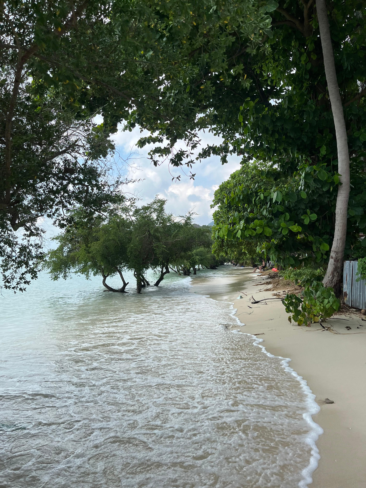
Sahil incecik ve tertemiz kumlara sahip. Deniz tamamen kum ve su pırıl pırıl. En sevdiğim detaylardan biri ise sahil boyunca denizin içine doğru uzanan ağaçlar oldu. Bazıları suya doğru eğilmiş, bazıları neredeyse denizin içinden çıkıyormuş gibi duruyor. İsterseniz gölgelerinde oturun, isterseniz sahil boyunca yürüyün; burada uzun uzun vakit geçirmek gerçekten keyifli.
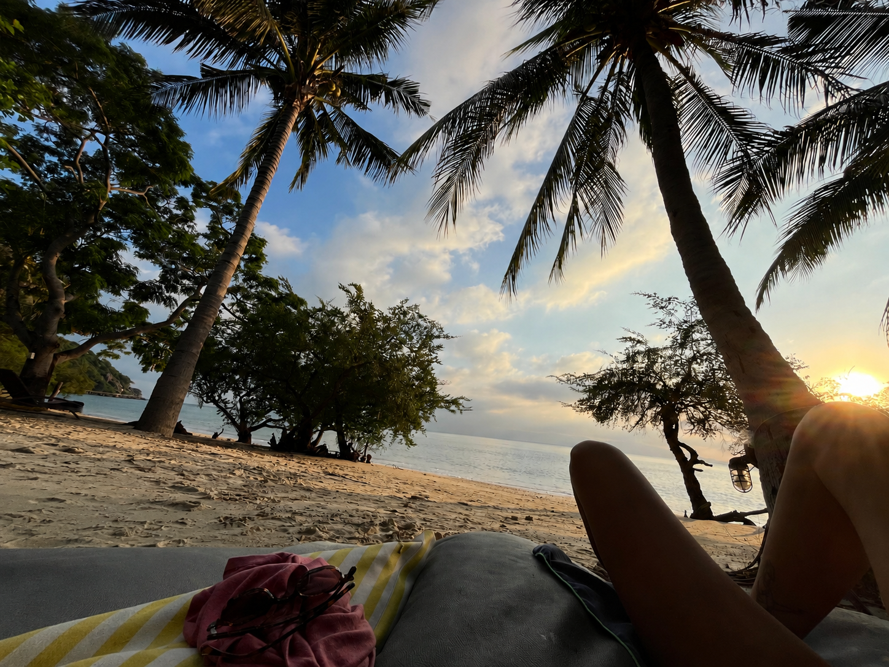
Deniz sığ ve genellikle sakin olduğu için çocuklu aileler için de uygun. Plaja
The Cabin Beach Resort tarafındaki girişten girdim. O taraf daha sakin olduğu
için motoru bırakacak yer bulmakta da hiç zorlanmadım.
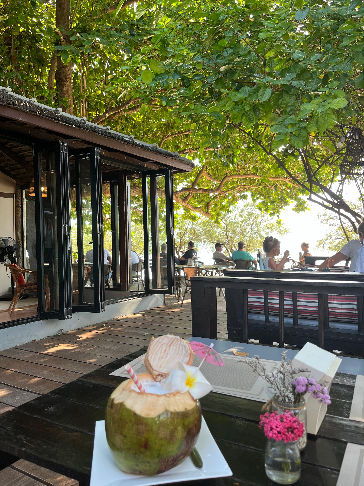
Sahil boyunca denize girip çıktım, uzun uzun yürüyüş yaptım. Yol üzerinde CocoHut Restaurant & Bar’a denk geldim. Sakin tam mola vermelik ağaçların arasına kurulmuş bir mekan. Yemekleri ve coconut suyu çok lezzetliydi.
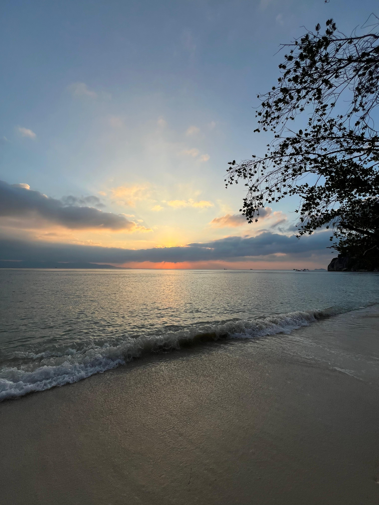
Gün ilerledikçe kalabalık dağılmaya başladı ve gün batımı saatlerinde ortam tamamen sakinleşti.
Gökyüzünün yavaş yavaş renk değiştirmesi, denizin üzerindeki yansımalar… Günün sonunda o rahatlama
hissi gerçekten tarif edilemezdi.
Ancak küçük bir uyarı: Güneş battıktan sonra çok geç kalmamaya çalışın. Dönüş yolu
kısa bir mesafe olsa da,
yer yer dik ve
dönemeçli, ayrıca bazı bölümlerde aydınlatma oldukça az. Motorla dönecekseniz, karanlık iyice
çökmeden yola çıkmak çok daha güvenli ve rahat olacaktır.
3.Bottle Beach
Bottle Beach, Koh Phangan’ın en bakir ve en izole plajlarından biri. Adanın kuzeyinde yer alıyor ve ulaşımı biraz zahmetli olduğu için hala o “keşfedilmemiş” hissini koruyor. Zaten belki de en güzel tarafı bu.
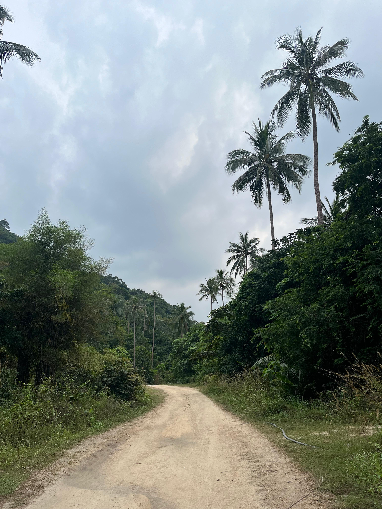
Buraya tekneyle gidebilir ya da motorla ulaşabilirsiniz. Adanın genelinde yollar gayet güzel ve motorla ulaşım oldukça rahat. Ancak Bottle Beach sapağından döndükten sonra yol bir anda kötüleşiyor; toprak ve oldukça engebeli bir hale geliyor. Motorla bir noktaya kadar gittim ama sonrasında devam etmek pek mümkün değildi. Motoru bırakıp yaklaşık 2 kilometrelik bir yürüyüş yaptım. Daha kolay bir seçenek isteyenler için plaja arazi araçlarıyla ulaşım da var. Ücreti 100 THB.
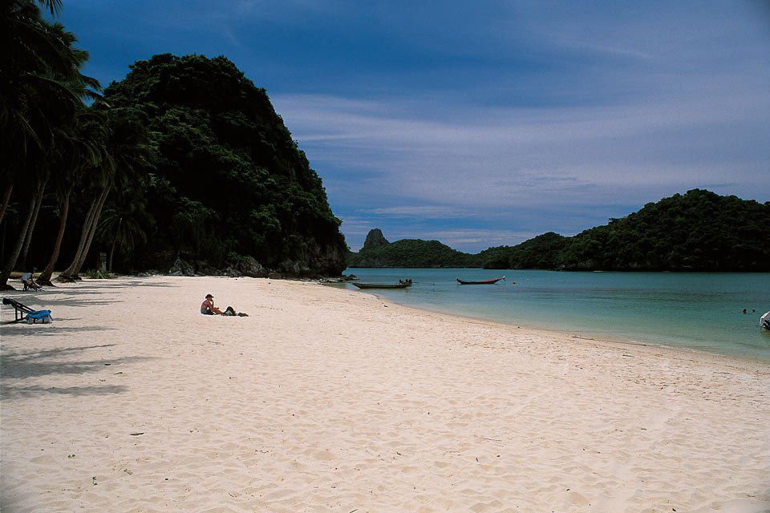
Bottle Beach’e geldiğinizde diğer plajlardaki hareketliliği burada pek görmüyorsunuz. Büyük
beach barlar, yüksek sesli müzik veya kalabalık yerine daha çok deniz, kum ve doğa var.
Birkaç küçük bungalow ve salaş restoran bulunuyor. Lüks bir yer arıyorsanız burası size göre
olmayabilir ama biraz kafa dinlemek ve birkaç saat gerçekten hiçbir şey yapmamak
için oldukça müsait.
Açıkçası Bottle Beach’te konaklama olduğunu gitmeden önce bilmiyordum. Bungalovları görünce
“Keşke bunu önceden bilseydim” dedim. Denize birkaç adım mesafede,
doğanın içinde uyanmak gerçekten çok güzel olurdu. Eğer planınızı biraz esnetebiliyorsanız,
burada en az bir gece kalmayı değerlendirebilirsiniz.
Bottle Beach’teki konaklama seçeneklerine göz atmak isterseniz
Booking.com’daki yerlere buradan bakabilirsiniz.
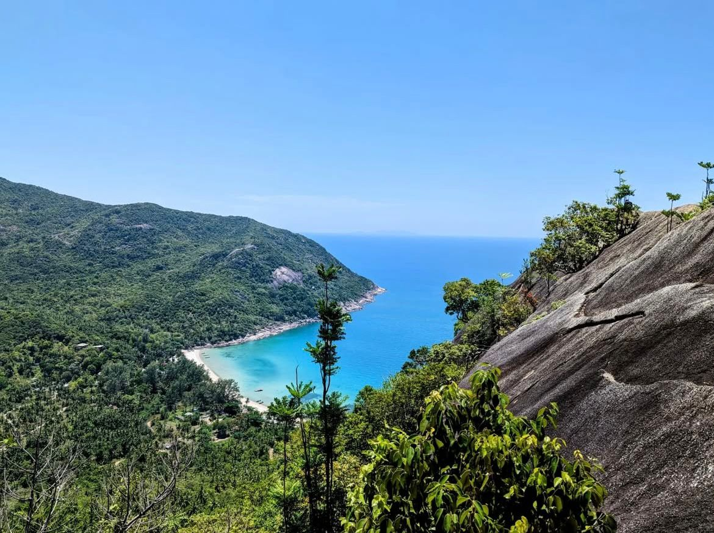
Bottle Beach’e kadar gelmişken seyir tepesine çıkmadan olmaz dedim. İyi ki de
demişim. Yukarı vardığınız anda bütün koy ayaklarınızın altına seriliyor. O hilal
şeklindeki sahil, turkuaz deniz ve etrafını saran yemyeşil tepeler… Manzara tam anlamıyla kartpostal
gibi.
Viewpoint’e iki farklı şekilde ulaşabiliyorsunuz: Bottle Beach’e doğru yürüyüş
yaparken tabelaları
takip ederek ya da plajdan yukarı doğru çıkan patikayı kullanarak. Ben plajdan çıkan patikayı tercih
ettim. Yürüyüş çok uzun değil ama hafife alınacak gibi de değil; yer yer dik ve kayalık. Ortalama 45
dakika kadar sürdü ama sıcak havada efor
istiyor. Spor ayakkabı giymek ve yanınıza su almak kesinlikle önemli.
Ben sabah erken saatlerde çıktım ve ışık gerçekten çok güzeldi. Güneş yükseldikçe denizin
rengi turkuazdan maviye, tepelerin yeşili ise daha da belirginleşiyor. Bottle Beach’e
kadar gelmişken bu manzarayı görmeden dönmeyin.
4. Mae Haad Beach
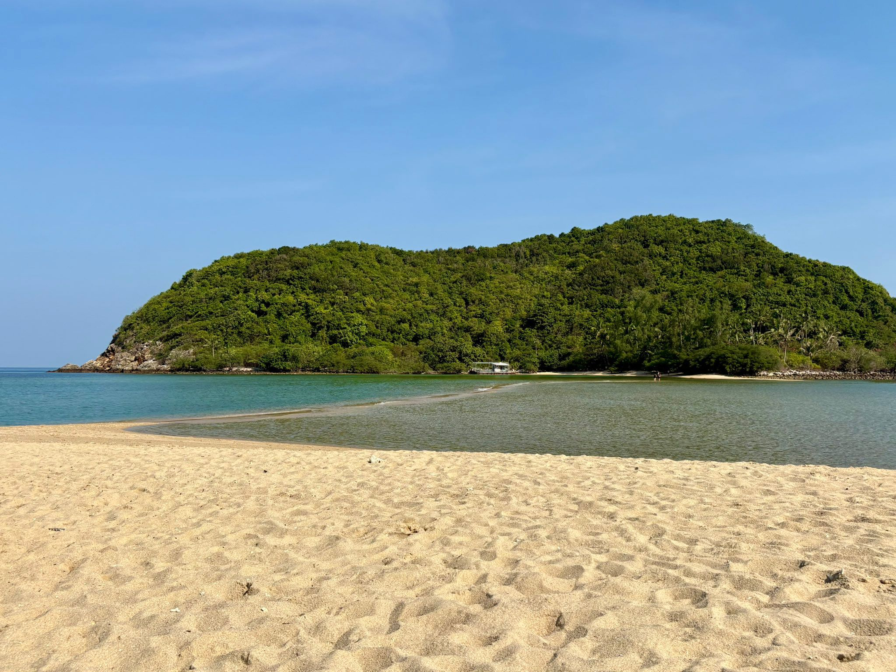
Mae Haad Beach, özellikle şnorkel yapmak isteyenler için güzel
plajlardan biri. Sahilden biraz açıldığınızda başlayan kayalık bölgelerde küçük balıklar ve
mercanlar görmek mümkün.
Deniz genellikle sığ ve sakin. Plajın en güzel detaylarından biri ise gelgit durumuna göre
ortaya çıkan kum seti (sandbar). Sular çekildiğinde küçük adaya yürüyerek
geçebiliyorsunuz.
Şnorkel yapacaksanız hava durumuna mutlaka bakın; güneşli havalarda su çok daha berrak oluyor.
Kayalık bölgeler için deniz ayakkabısı da işinizi kolaylaştıracaktır.
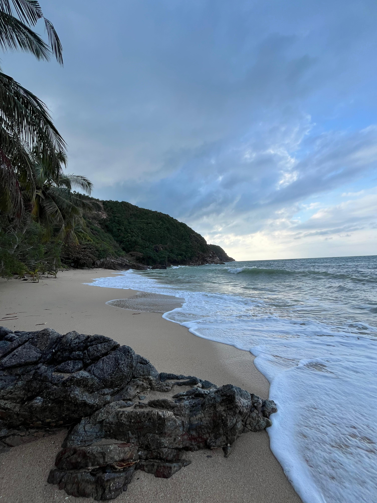
Mae Haad Beach’te yürüyüş yaparken tamamen tesadüfen küçük bir keşif daha yaptım. Sahilin biraz ilerisine doğru yürürken oldukça sakin ve neredeyse boş bir koya denk geldim. Sahilde kimsecikler yoktu; denizin sesi ve doğanın içinde sanki adada yalnız kalmışım gibi hissettim.
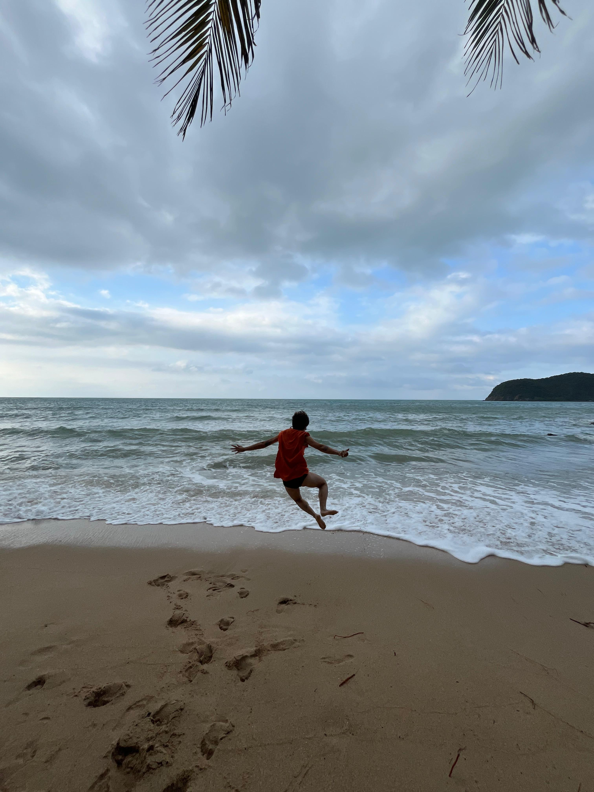
Saatlerce oturup yüzdüm, eğlendim ve bu huzurlu atmosferin tadını çıkardım. Sonradan öğrendim ki burası aslında adadaki gizli nude beachlerden biriymiş. Açıkçası burası biraz gizli kalsa fena olmaz gibi ama yolunuz düşerse siz de bir uğrayın derim 🙂
5. Secret Beach
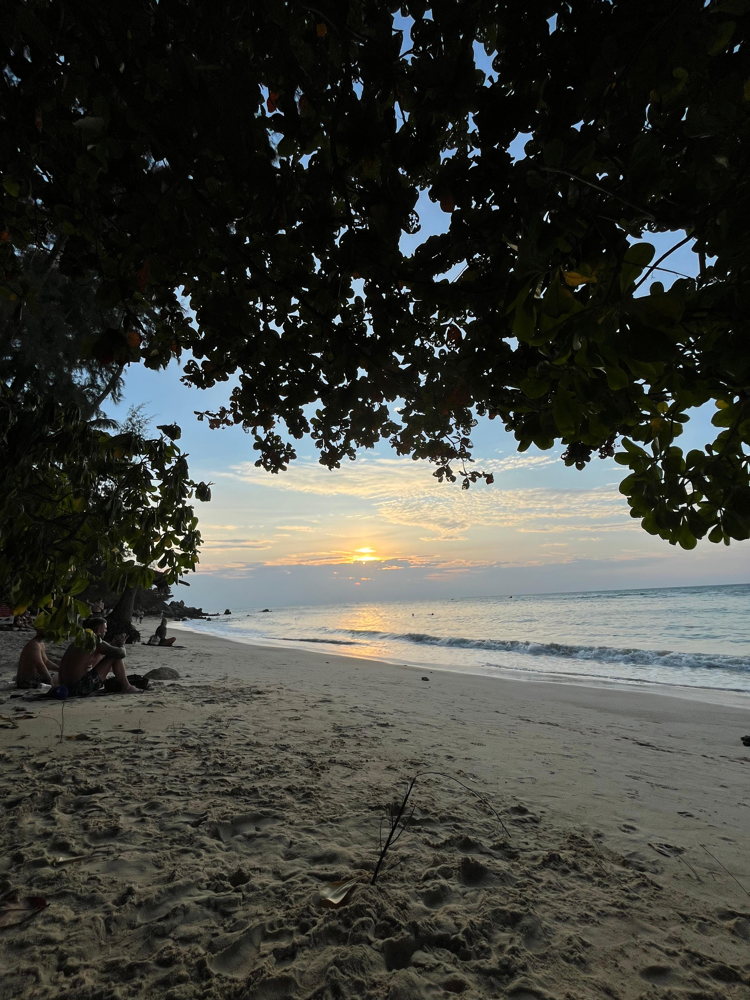
Secret Beach, Koh Phangan’ın batı kıyısında yer alan küçük ve keyifli
plajlardan biri. Adı Secret Beach ama açıkçası o kadar da secret değil. Yine de
sakin ve samimi bir havası var.
Plaj küçük, deniz genellikle sakin ve berrak. Sahil boyunca birkaç beach bar ve restoran
bulunuyor; gün içinde denize girip biraz takılabilir, bir şeyler yiyip içebilirsiniz.
Özellikle gün batımına doğru ortam daha da güzelleşiyor.
Ulaşımı da oldukça kolay. Ana yoldan kısa bir yürüyüşle plaja inebiliyorsunuz. Yani
Bottle Beach gibi ulaşmak için maceraya atılmanıza gerek yok.😄
Çok izole bir yer aramıyor ama kalabalık ve parti havasından da uzak durmak istiyorsanız
Secret Beach güzel bir seçenek.
6. Hin Kong Beach
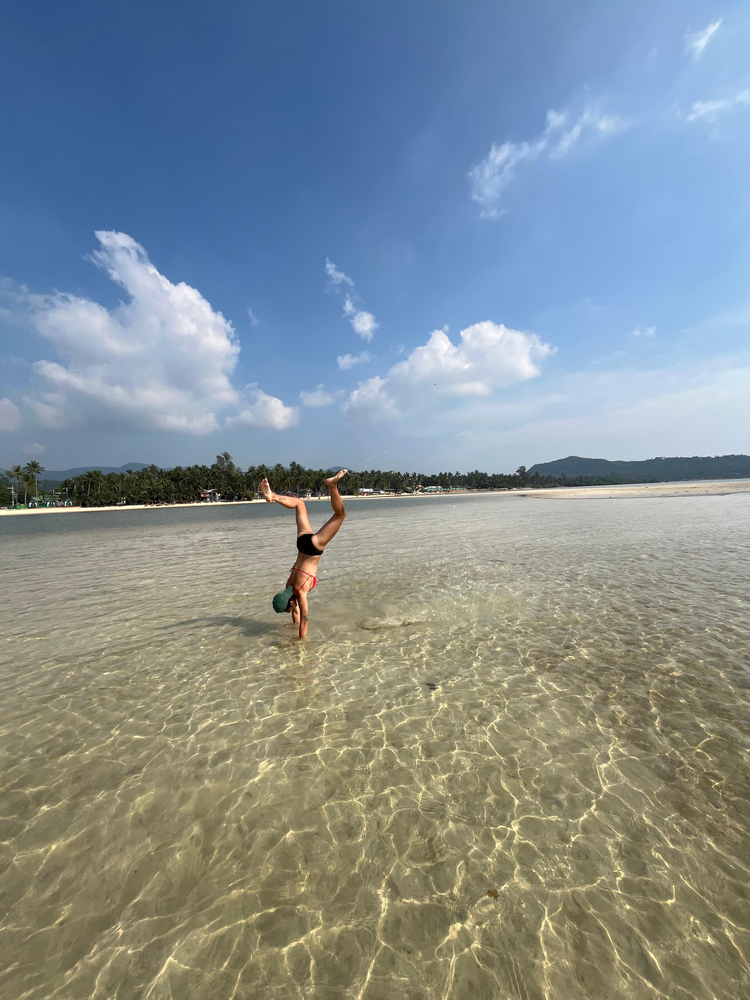
Hin Kong Beach, Koh Phangan’ın batı tarafında özellikle gün batımı
için sevdiğim plajlardan biri. Deniz oldukça sığ ve gelgitten dolayı gün içinde görüntüsü
sürekli değişiyor. Bu yüzden burası yüzmekten çok manzaraya karşı oturup vakit geçirmek için güzel.
Sahil boyunca birkaç beach bar, kafe ve yoga alanı bulunuyor. Akşamüstü insanlar minderlerini
kapıp sahile yerleşiyor, müzik eşliğinde gün batımını izliyor. Ortam oldukça sakin ve rahat;
öyle büyük parti kalabalıkları falan yok.
Denize girmek için değil, gün batımını izlemek için gelin. Bir şeyler içip
manzaraya karşı oturmak istiyorsanız Hin Kong güzel bir seçenek.
Koh Phangan Şelaleleri
Koh Phangan sadece plajlardan ibaret değil. Adanın içlerine doğru ilerledikçe karşınıza farklı şelaleler ve doğal yüzme alanları çıkıyor. Özellikle sıcak günlerde kısa bir yürüyüş yapıp biraz serinlemek için güzel bir seçenek.
1. Paradise Waterfall
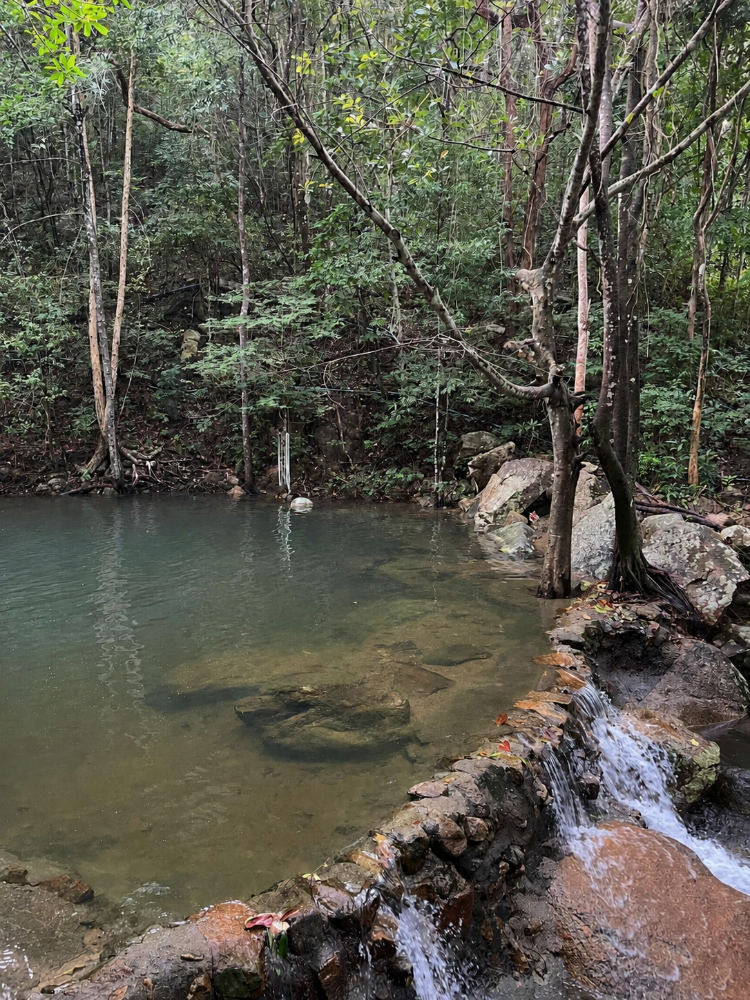
Paradise Şelalesi’ne Malibu Beach’e giderken uğradım ve güzel bir mola oldu. Giriş kişi başı 30 THB. Adadaki ilk şelale deneyimimim burasıydı. Açıkçası çok büyük bir şelale değil, yani öyle “vay be” dedirtecek bir tarafı yok. Ama yemyeşil doğası ve serin suyu sayesinde özellikle sıcak bir günde kısa bir mola vermek için şans verilebilir. Eğer Malibu Beach tarafına yolunuz düşerse uğrayabilirsiniz.
2. Phaeng Waterfall
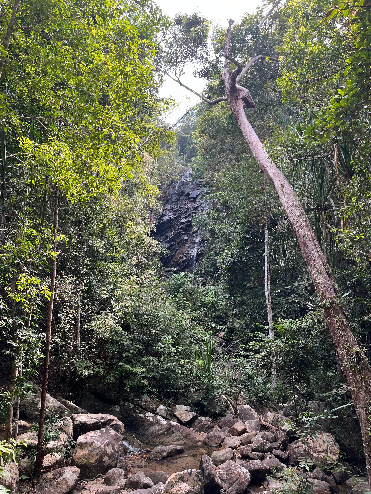
Phaeng Şelalesi aslında iki bölümden oluşuyor: Phaeng Noi (küçük)
ve Phaeng Yai (büyük). Şelaleye ulaşmak için
Than Sadet Koh Phangan National Park girişinden giriyorsunuz ve kişi başı
100 THB ödüyorsunuz. Parkla ilgili detayları Than Sadet başlığında ayrıca
anlattım.
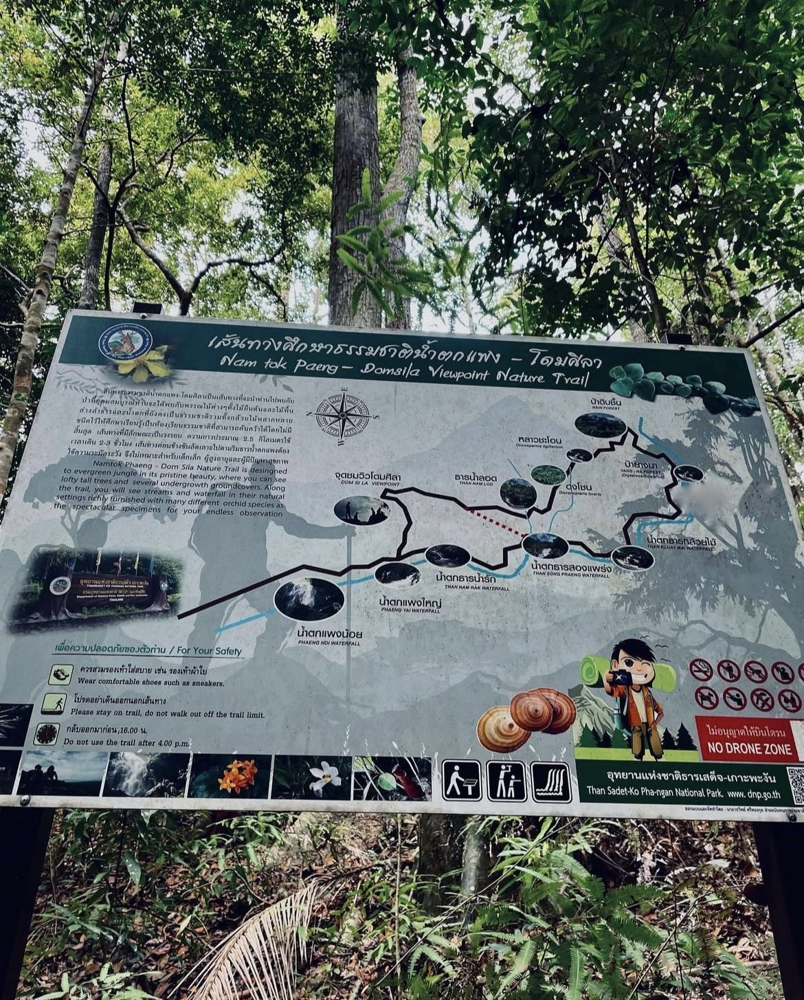
İlk olarak Phaeng Noi kısmına ulaşıyorsunuz. Kısa bir yürüyüşün ardından doğal havuzların olduğu alana geliyorsunuz. Biraz daha yukarı çıkarsanız Phaeng Yai tarafına devam edebilirsiniz. Burada yol biraz daha dik ve taşlı hale geliyor.Şelalenin suyu mevsime göre oldukça değişiyor. Yağışlı dönemde daha güçlü akarken, Ocak ayında gittiğimde su oldukça sakindi. Yürüyüş çok uzun değil ama bazı bölümlerde dikkatli olmak gerekiyor. Yol boyunca yemyeşil doğanın içinden ilerleyip, uygun yerlerde suya girerek biraz serinleyebilirsiniz. Yanınıza şapka ve su almayı unutmayın.
3. Than Sadet Waterfall
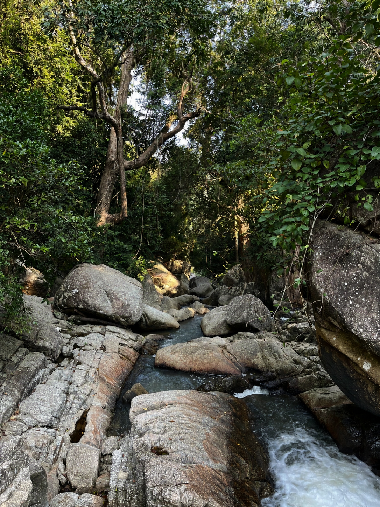
Than Sadet Waterfall, Koh Phangan’ın en güzel şelalelerinden biri bence. Adanın doğu kıyısına yakın konumda ve tamamen doğanın içinde, sakin bir atmosferi var. Diğer şelalelere göre daha geniş bir alana yayılıyor. Tek bir noktadan dökülen yüksek bir şelale değil, kayaların arasından basamak basamak akan doğal bir yapı düşünün.
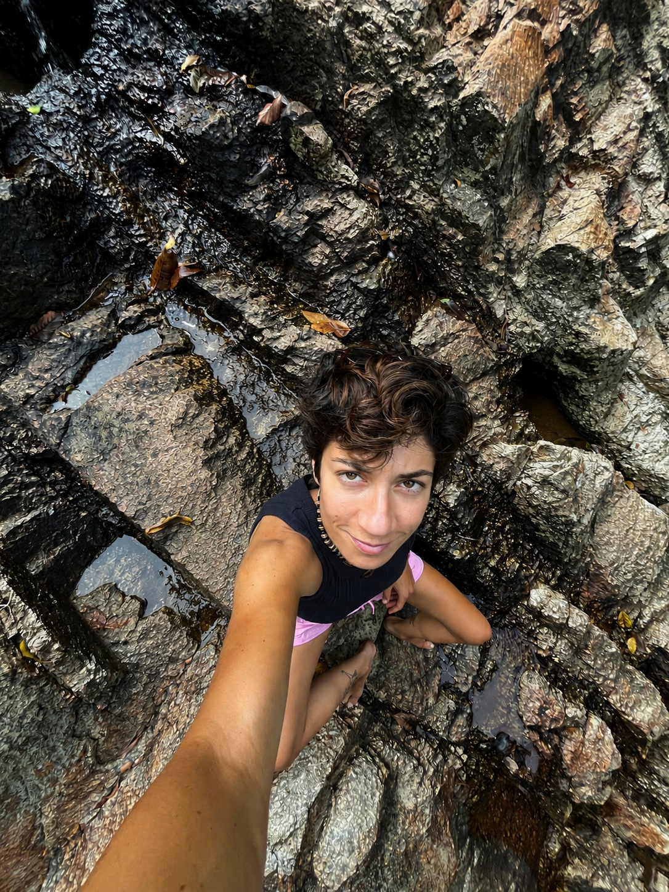
Kayaların üzerinde sekerek, kendinizi doğanın bir parçası gibi hissederek ilerliyorsunuz. Bazı yerlerde oturup dinlenmek, bazı yerlerde de suya girip serinlemek mümkün. Özellikle etrafta kimse yoksa biraz oturup suyun sesini dinlemek için oldukça güzel bir yer.
Adanın Zirvesine Tırmanın: Khao Ra
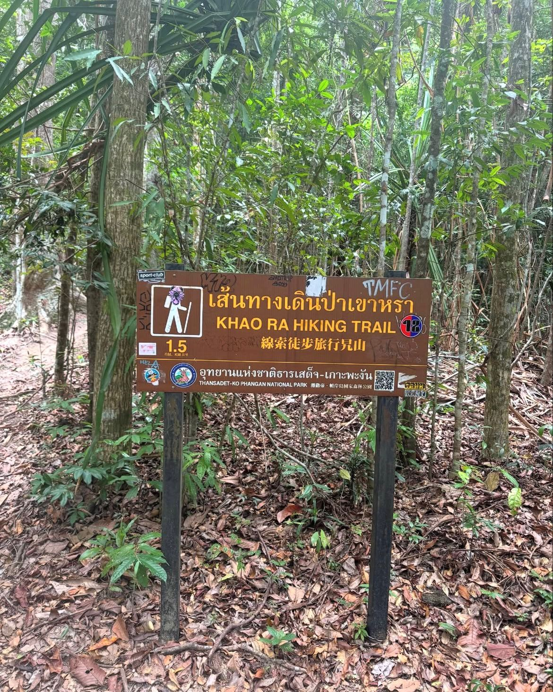
Khao Ra yürüyüşü, adanın en uzun ve en zorlu parkuru çünkü Koh Phangan’ın en yüksek
zirvesine
çıkıyorsunuz. Yani bu rota “kısa bir doğa yürüyüşü yapalım” planından biraz daha fazlası. Gerçekten
hazırlıklı gitmek gerekiyor.
Yaklaşık 1,5 - 2 saat sürecek tırmanış, Koh Phangan’ın ormanının içinden başlıyor. Yol boyunca küçük
bir dere ve küçük göletin yanından geçiyorsunuz; sonra rota giderek yükseliyor ve dağın daha yukarı
kısımlarına ulaşıyorsunuz.
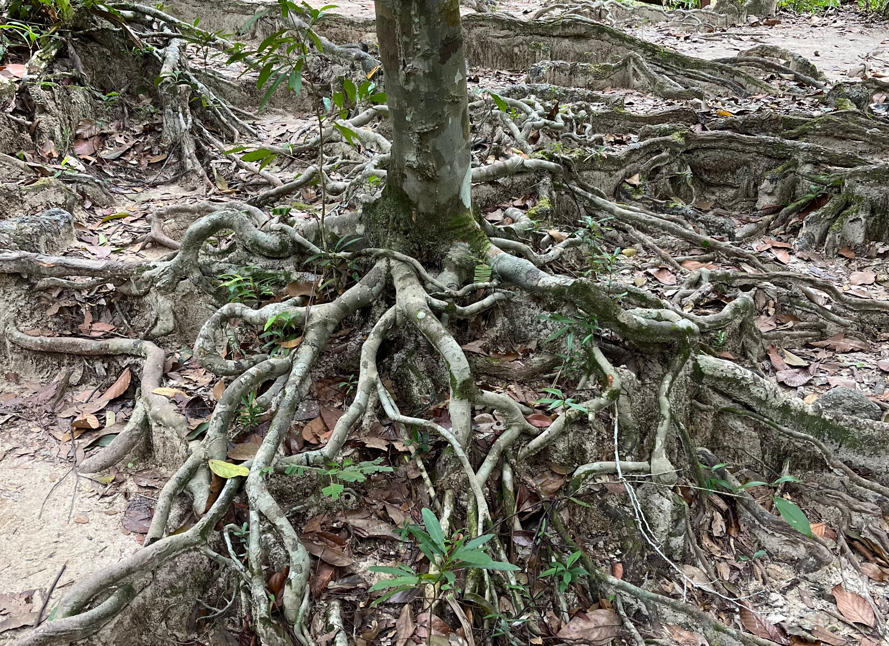
Son bölüm ise biraz daha dik ve yer yer tırmanış gerektiriyor. Ağaç köklerinin ve taşların üzerinden geçerek ilerliyorsunuz.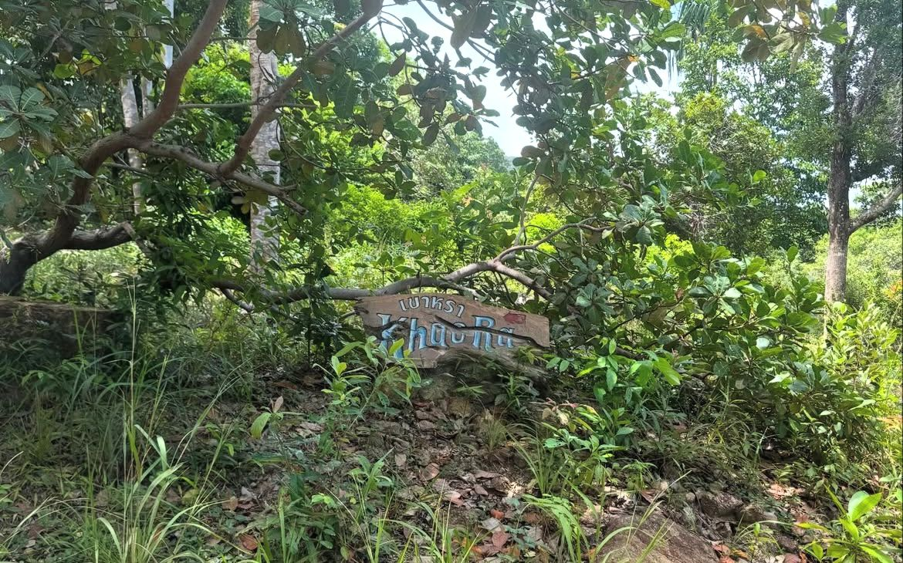
Tüm parkur (çıkış ve iniş) molalarla birlikte toplamda yaklaşık 4 saat sürdü. Bu yüzden yanınıza mutlaka yeterli su alın ve sağlam bir yürüyüş ayakkabısı giyin. Ayakkabı kesinlikle çok önemli.
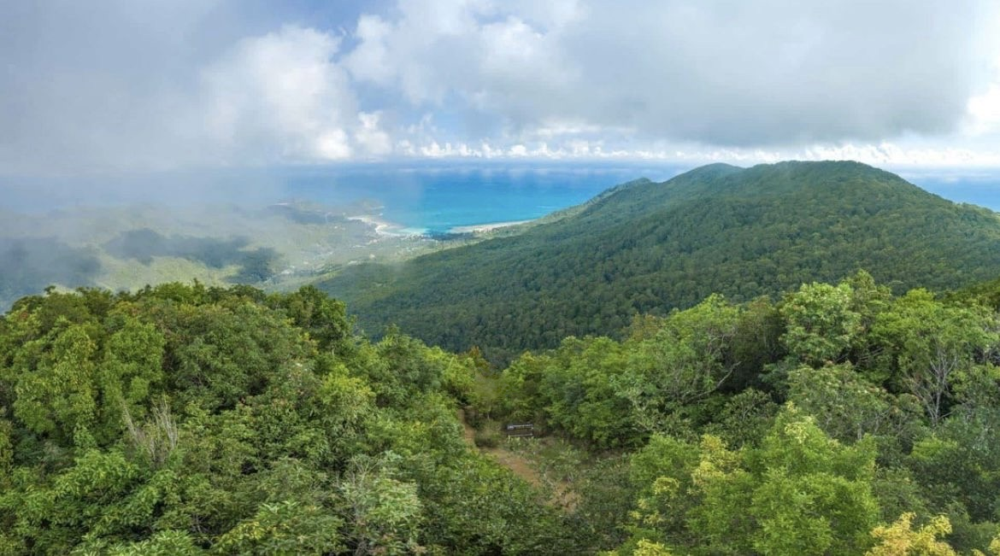
Zirveye vardığınız an, tüm yorgunluk orada bitiyor.
Bu yürüyüş için en iyi zaman kesinlikle erken sabah saatleri. Hava henüz çok sıcak ve nemli değilken
çıkmak hem daha güvenli hem de çok daha keyifli oluyor. Eğer benim gibi orman yürüyüşlerinin ve
zorlayıcı parkurların hastasıysanız ve “adanın sadece plajlarını değil, zirvesini de görmek
istiyorum” diyorsanız, Khao Ra sizi hem zorlayacak hem de unutulmaz bir deneyim yaşatacak.
Than Sadet Koh Phangan National Park
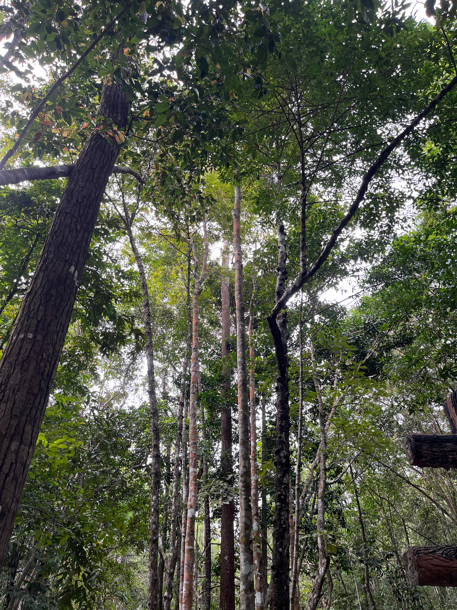
Than Sadet Koh Phangan National Park, Koh Phangan’ın plajlardan biraz
uzaklaşıp doğanın içine girebileceğiniz tarafı. Park, adanın doğu kıyısından iç kesimlerine
kadar uzanan geniş bir ormanlık alanı kapsıyor.
Parkın iki ana girişi bulunuyor. Doğu tarafındaki giriş Than Sadet Waterfall
çevresine, kuzeydeki giriş ise Phaeng Waterfall ve trekking rotalarına
açılıyor. Dom Sila Viewpoint ve adanın en yüksek noktası olan
Khao Ra yürüyüşleri de bu taraftan başlıyor.
Giriş kişi başı 100 THB. İçeri girdikten sonra kendinizi direkt tropikal ormanın içinde buluyorsunuz. Parkta kısa bir yürüyüş yapmak isteyenler için Dom Sila Viewpoint, daha uzun ve biraz daha zorlayıcı bir rota isteyenler için ise Khao Ra bulunuyor.
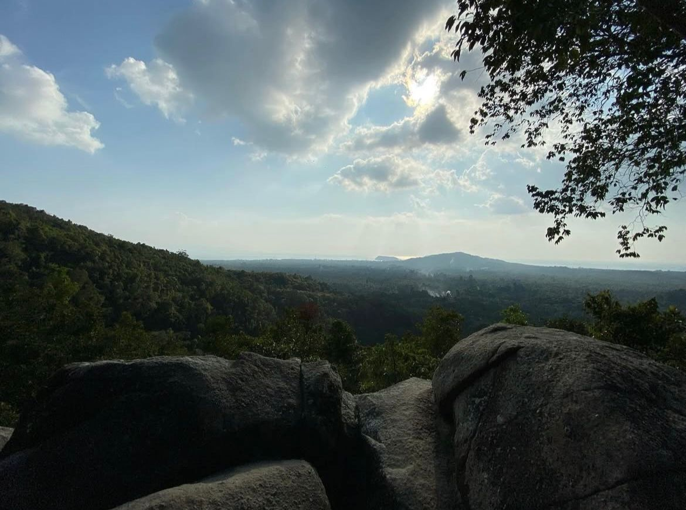
Dom Sila tarafındaki yürüyüş Phaeng Noi bölgesinden başlıyor. Çok uzun
değil ama yer yer dikleşiyor. Yukarı çıktığınızda adanın kuzey tarafını görebileceğiniz
güzel bir manzara var.
Khao Ra ise biraz daha ciddi bir yürüyüş. Hem daha uzun hem de daha
yorucu ama adanın en yüksek noktasına çıkıyorsunuz. Eğer Koh Phangan’da biraz da
orman ve yürüyüş görmek istiyorsanız, bu parkı listenize ekleyebilirsiniz. 🌿
Yoga ve Ruhsal İnziva
Koh Phangan son yıllarda sadece plajlarıyla değil, aynı zamanda yoga, meditasyon ve wellness kültürüyle de oldukça bilinen bir ada haline gelmiş. Özellikle adanın batı tarafındaki Sri Thanu bölgesi, yoga merkezleri, sağlıklı kafeler ve spiritüel toplulukların yoğunlaştığı bir yer olarak öne çıkıyor. Bu bölgede yürürken neredeyse her köşede bir yoga stüdyosu, meditasyon alanı ya da detoks merkezi görmek mümkün.
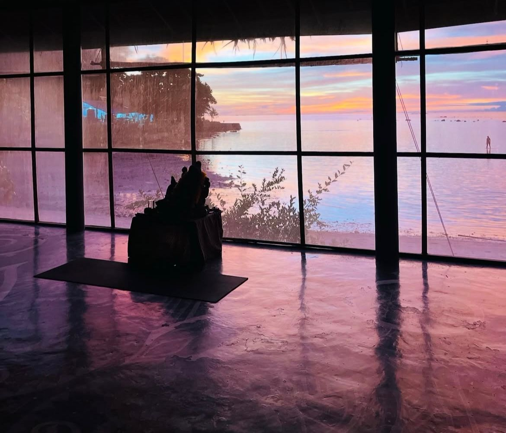
Adada birçok merkez günlük yoga dersleri, haftalık retreat programları ve meditasyon seansları düzenliyor. Sabah gün doğumunda yapılan yoga dersleri ve gün batımına karşı yapılan meditasyonlar oldukça popüler. Doğanın içinde, deniz manzaralı açık stüdyolarda yoga yapmak da Koh Phangan’daki deneyimin önemli bir parçası.
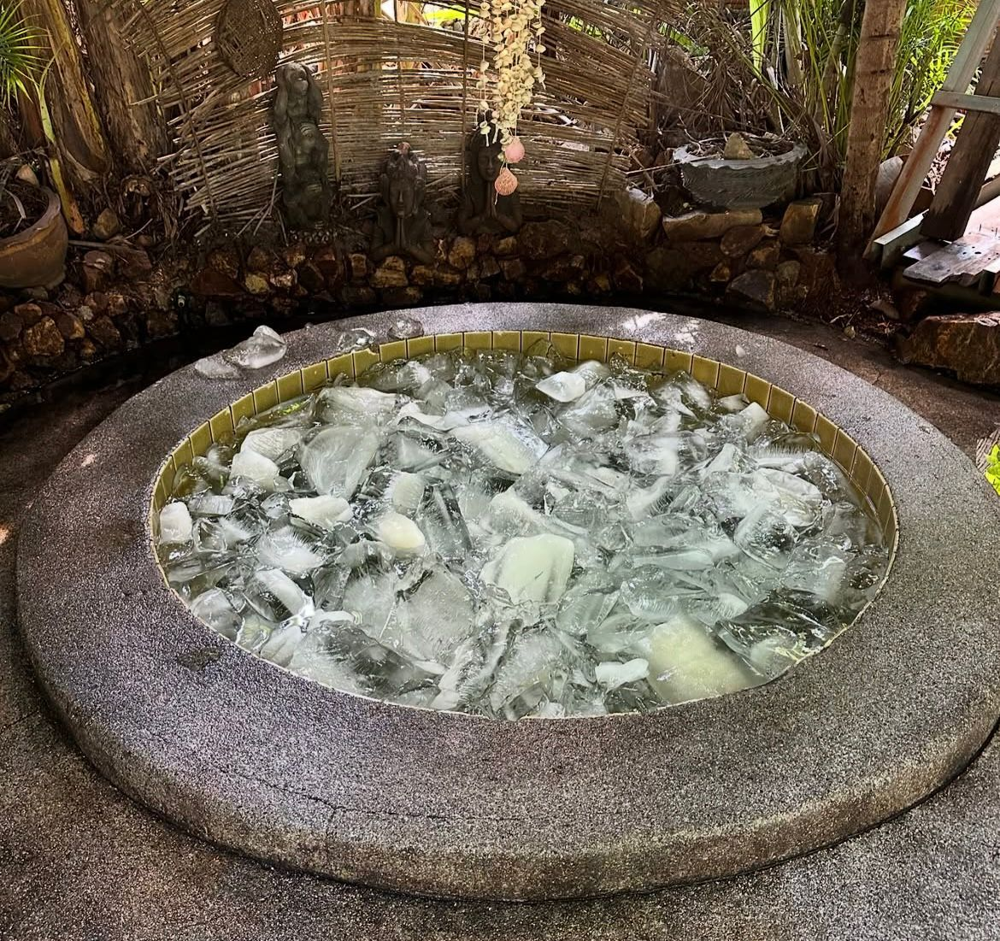
Bienim en sevdiğim deneyimlerden biri ise ice bath (buz banyosu) ve nefes terapileri oldu. Adada birçok wellness merkezinde büyük buz dolu havuzlara giriliyor ve genellikle rehber eşliğinde nefes egzersizleri yapılıyor. Önce nefes çalışmalarıyla vücudu hazırlıyorsunuz, ardından birkaç dakika buz gibi suyun içine giriyorsunuz. Bu uygulamanın bağışıklık sistemini güçlendirdiği, kan dolaşımını hızlandırdığı ve zihinsel dayanıklılığı artırdığı söyleniyor. İlk başta biraz göz korkutucu görünse de, çıkınca inanılmaz enerjik ve canlı hissettim.
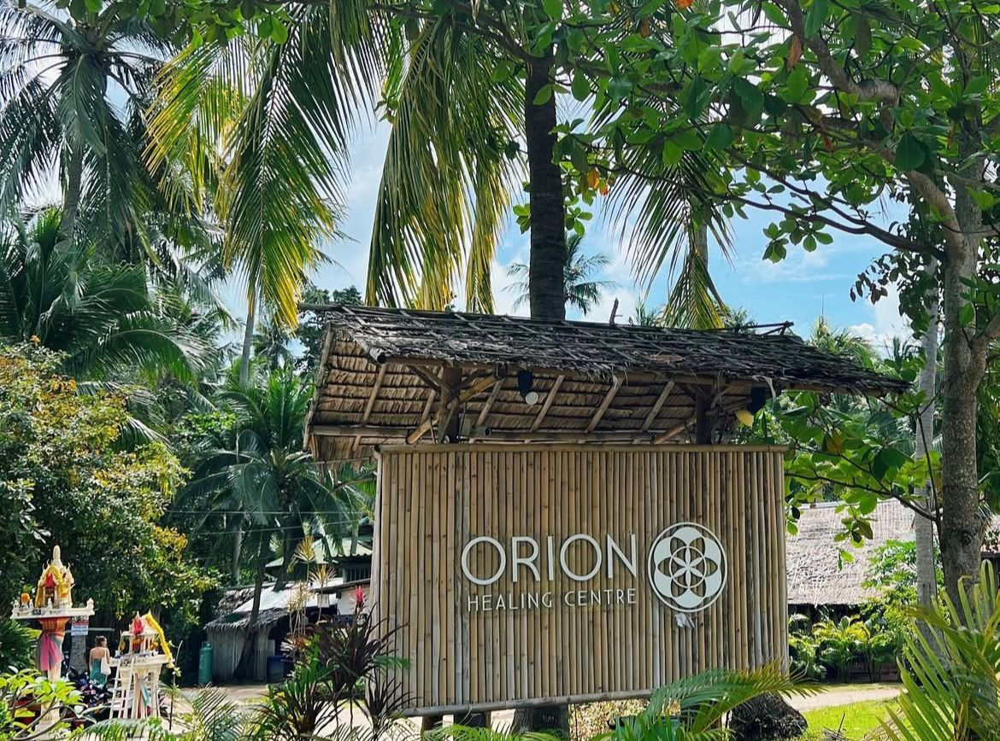
Bu tür deneyimleri sunan merkezlerden bazıları şunlar:
- Orion Healing Centre (Yin Yoga, Vinyasa Flow, Medicine Song Circle, Self-Sabotage
Healing, Steam Room, Ice Bath and Pool)
- Ananda Yoga & Detox Center (Kundalini, Power Vinyasa Flow)
- The Yoga House (Vinyasa Flow, Belief with Hypnotherapy, Shamanic Breathwork and
Pool)
- Xantiva Health Club (Ice Bath, Cold Plunge, Sauna, Onsen, Bonfire and Ocean-view
Gym)
- Wild Wood Beach Fitness (Gym on the beach, Ice Bath, Sauna, Steam Room and Pool)
Ben Xantiva Health Club ve Orion Healing Centre’da birer gün
geçirdim ve ikisinde de birbirinden farklı deneyimler yaşadım. Xantiva Koh Phangan’da buzların taş
küvete nasıl yerleştirildiği
sürecine de tanık oluyorsunuz. Buraya direkt gidebiliyorsunuz,
rezervasyon gerekmiyor. Orion Healing Centre ise biraz daha planlı; buraya katılmak için rezervasyon
yapmak gerekiyor.
Günlük, haftalık veya aylık programlar ve fiyat detayları için
Orion Healing Centre web sitesini
ziyaret edebilirsiniz.
Ayrıca burada konaklama imkanı da varmış. Gerçekten buraya bayıldığım için bir dahaki gelişimde
en az 2 gün burada konaklamayı planlıyorum.
Yoga ve İnziva merkezlerine yakın Srithanu bölgesindeki konaklamalara buradan göz atabilirsiniz :
www.booking.com
İster bir günlük katılın, ister adada uzun kalıp bir haftalık yoga veya
wellness programlarına dahil
olun. Ama mutlaka dahil olun! Bu inziva merkezleri adeta bir “reset” düğmesi gibi, bedeninizi ve
zihninizi sıfırlamanız için mükemmel bir fırsat, benden söylemesi..
Koh Phangan Night Market
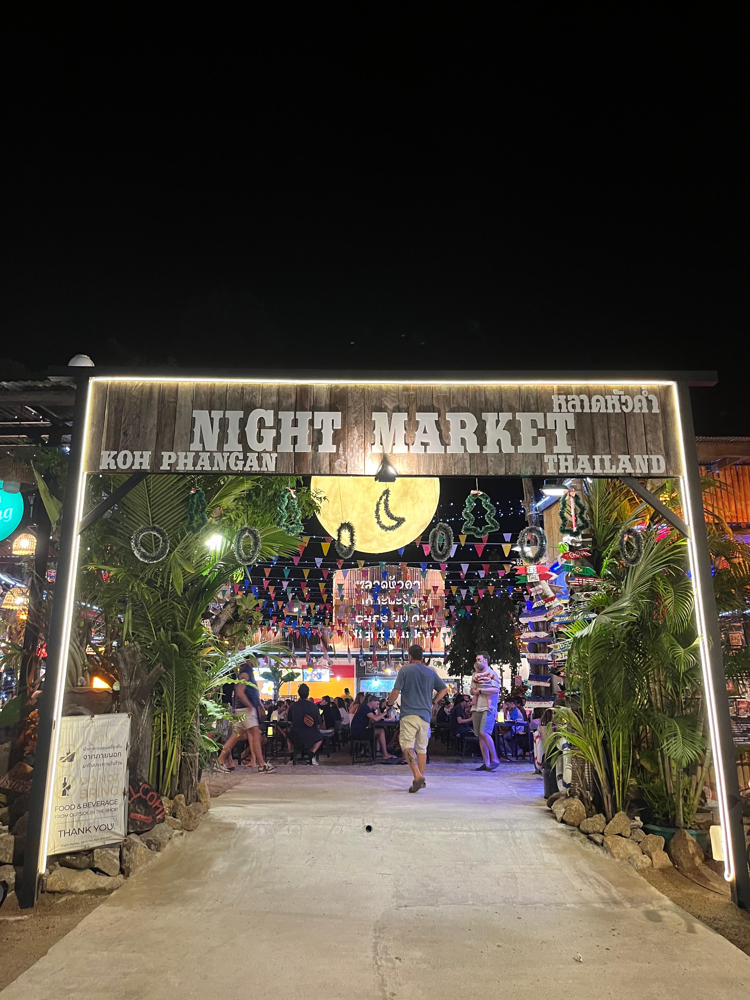
Her akşam yolum buraya düştü ve gerçekten inanılmaz keyifliydi. Yemek seçenekleri çok fazla; Tay yemeklerinden atıştırmalıklara, taze meyvelerden tatlılara kadar her şeyi bulabiliyorsunuz. Üstelik fiyatlar da oldukça uygun. 150–200 Baht civarında gayet güzel bir akşam yemeği yiyip üzerine tatlınızı da alabilirsiniz.
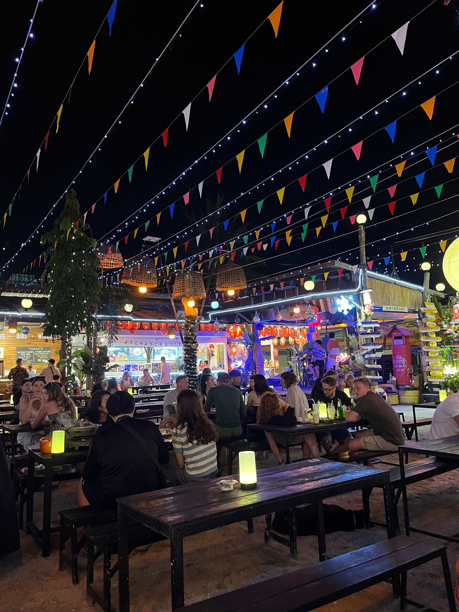
Kimi akşamlar yerel müzik de oluyor, ortam ışıl ışıl ve çok canlı.
Benim favorim Pineapple Fried Rice ve Pad
Thai oldu; özellikle
Pineapple Fried Rice’ı mutlaka
denemelisiniz.
Haad Rin Walking Street
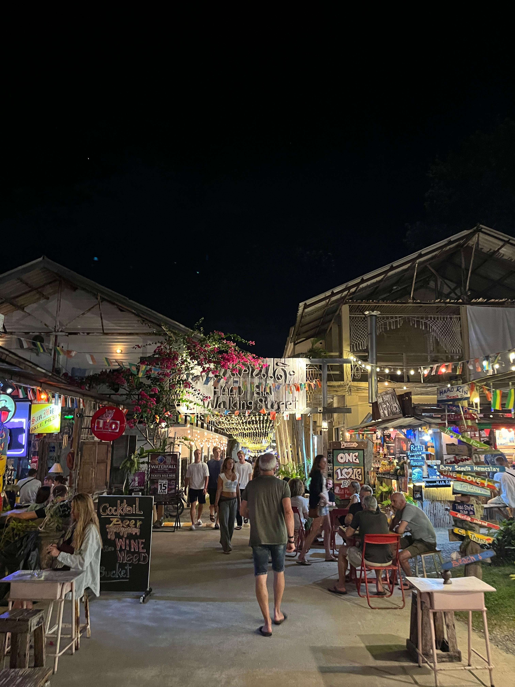
Haad Rin Walking Street, adanın en hareketli akşam noktalarından biri. Güneş batarken sokaklar ışıl ışıl oluyor, her köşede barlar, kafeler, sokak yemekleri ve hediyelik eşya tezgahları var.
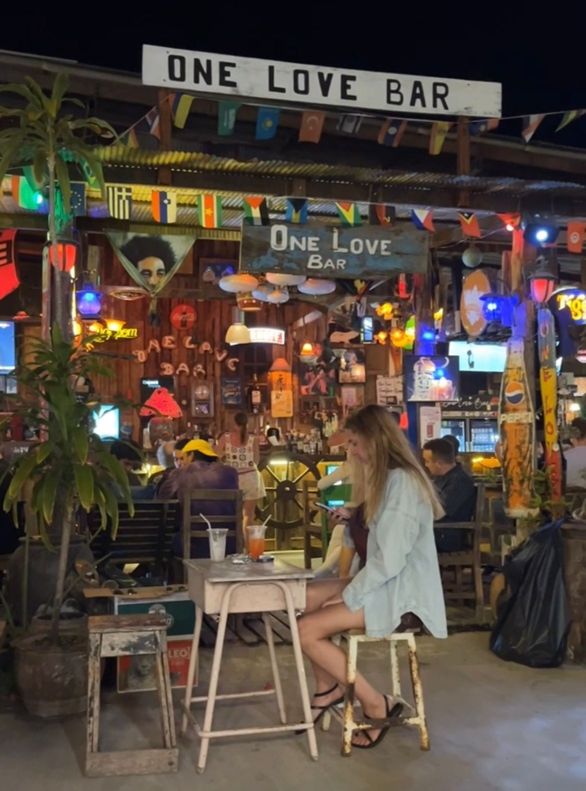
Özellikle akşam yürüyüşleri için burayı çok sevdim. Yemek konusunda pek çeşitlilik yok ama atıştırmalık muhakkak bir şeyler bulabiliyorsunuz. Burada bar keyfi yapıp ortamın tadını çıkardım çoğunlukla. Müzikler kesinlikle rahatsız etmiyor; ortam canlı ve keyifli. Sosyalleşmek için çok uygun; sıcak ve samimi.
Koh Phangan Full Moon Party ve Half Moon Party
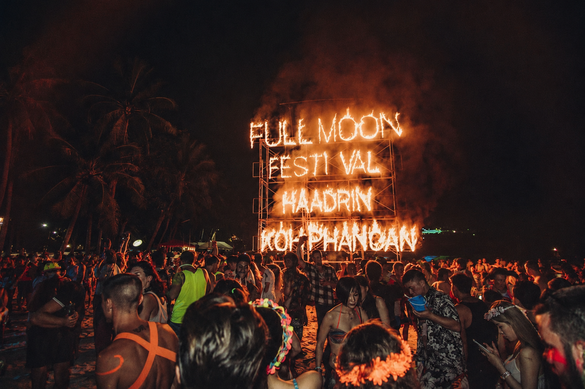
Koh Phangan denince akla gelen ilk şeylerden biri tabii ki Full Moon Party.
Her ay dolunay döneminde Haad Rin’deki Sunrise Beach dev bir açık hava
partisine dönüşüyor. Sahil boyunca müzikler, DJ’ler, ateş gösterileri ve sabaha kadar
devam eden bir kalabalık var. Dünyanın dört bir yanından insanlar sırf bu gece için adaya
geliyor.
Full Moon Party gerçekten büyük ve oldukça kalabalık bir deneyim, herkese hitap etmeyebilir. Eğer
özellikle parti için
Koh Phangan’a gelecekseniz, tarihleri önceden kontrol etmenizi ve konaklamanızı erken
ayarlamanızı tavsiye ederim. Güncel parti tarihlerini
buradan
kontrol edebilirsiniz.
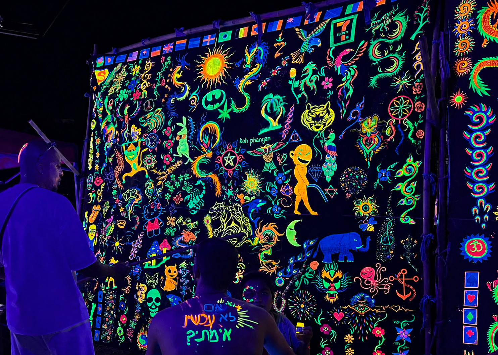
Partiye hazırlığın bir parçası da neon vücut boyaları.
Haad Rin boyunca parti öncesinde vücuduna rengarenk desenler yapan birçok kişi ve stant
göreceksiniz. İsterseniz hazır desenlerden birini seçebilir, isterseniz kendi tasarımınızı
yaptırabilirsiniz.
Bazı kafe ya da hostellerde parti öncesinde ücretsiz vücut boyama etkinlikleri de oluyor. Hem
hazırlanmak
hem de diğer insanlarla tanışmak için oldukça güzel bir fırsat. İsterseniz neon boyaları
marketlerden
alıp kendi tasarımınızı da kendiniz yapabilirsiniz.
Küçük bir uyarı: Neon boyalar kıyafetlerde kalıcı iz bırakabiliyor.
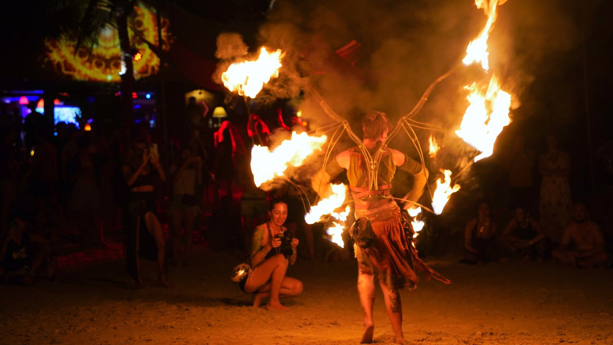
Half Moon Festival ise biraz farklı. Full Moon gibi sahilde değil, adanın
iç tarafındaki jungle alanında düzenleniyor ve ayda iki kez gerçekleşiyor.
Daha çok festival havasında, farklı sahneler, elektronik müzik, ışık gösterileri ve ormanın
içinde sabaha kadar devam eden bir parti ortamı var.
Bence ikisini birbirinden ayıran en önemli şey atmosferi. Full Moon daha büyük,
daha kalabalık ve daha kaotik; Half Moon ise daha çok festival havasında. Yani
“Ben büyük bir sahil partisinin içinde olmak istiyorum” diyorsanız Full Moon, “Müzik ve
atmosfer benim için daha önemli” diyorsanız Half Moon daha iyi bir seçenek olabilir.
Half Moon’un güncel tarih ve etkinlik detaylarına
buradan
bakabilirsiniz.
Açıkçası Koh Phangan’ın güzel tarafı da burada. Parti yapmak için geldiyseniz
seçenek çok, istemiyorsanız da adanın sakin taraflarında kendi ritminizde
takılabilirsiniz.
Benim için adayı güzel yapan şey biraz da bu dengeydi.
Amsterdam Bar
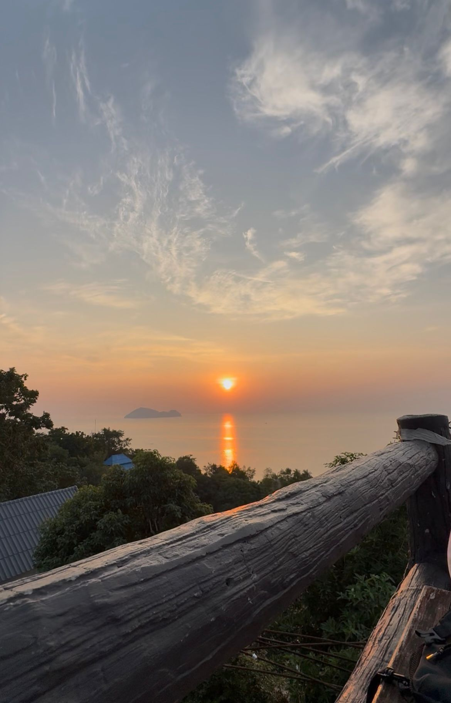
Koh Phangan’da gün batımını izlemek için gittiğim yerlerden biri de Amsterdam Bar. Mekan tepenin üzerinde olduğu için gün batımını karşıdan izleyebiliyorsunuz ve manzara gerçekten harika. Her gün farklı etkinlikler ve müzikler oluyor.
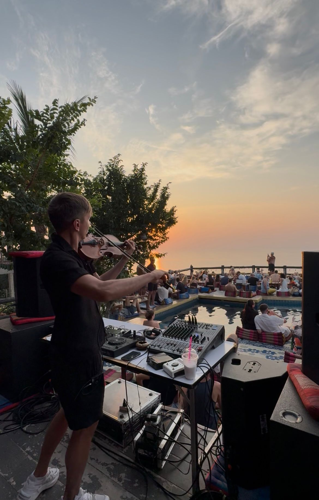
Ben gittiğimde DJ, elektronik müziğe kemanıyla eşlik ediyordu. Güneş batarken müzik, manzara ve ortam birleşince gerçekten güzel bir akşam oldu. İsterseniz minderlerde oturup gün batımını izleyebilir, isterseniz havuza girip biraz serinleyebilirsiniz.
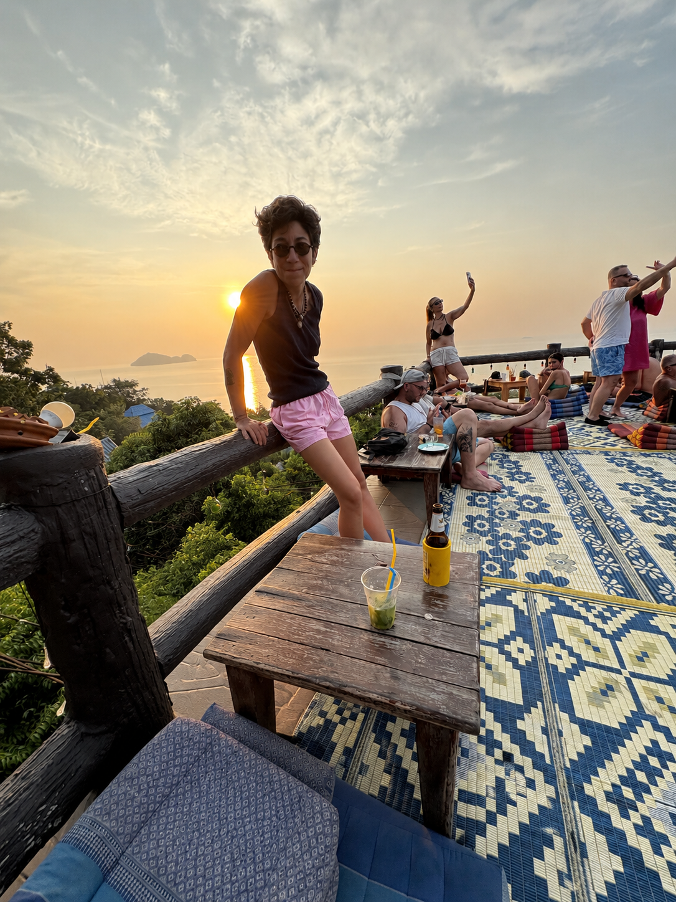
Kokteylleri de oldukça başarılı. Özellikle tropikal kokteyllerini çok beğendim.
Fiyatlar da Koh Phangan için normal seviyede. Her gün 12.00–01.00
arasında açık, ancak bana sorarsanız buranın en güzel zamanı kesinlikle
gün batımına yakın saatler.
Eğer Koh Phangan’da
gün batımı için güzel bir mekan arıyorsanız, Amsterdam Bar’ı listenize
ekleyebilirsiniz.
LightHouse Koh Phangan
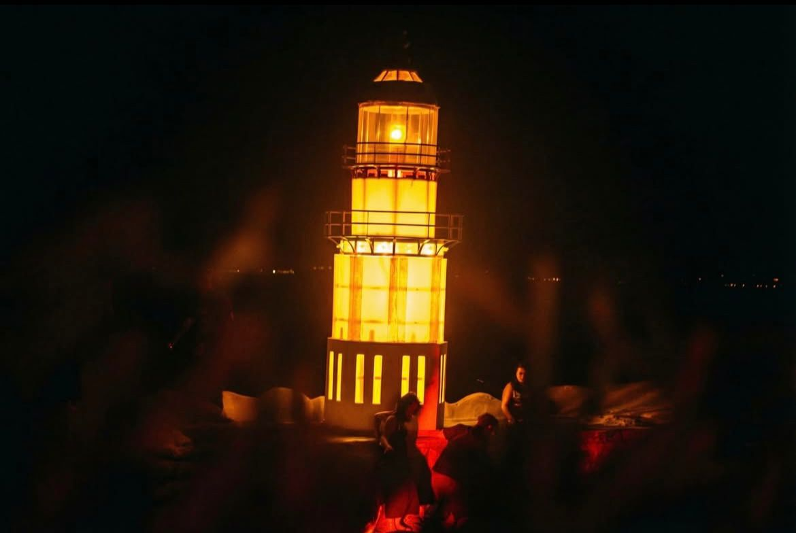
Koh Phangan’daki en ikonik gece mekanların biri olan Lighthouse, Haad Rin’e oldukça yakın ama kalabalığın biraz dışında, küçük bir koyun içinde yer alıyor. Aracınızı bıraktıktan sonra mekana ulaşmak için denizin üzerinden uzanan uzun bir tahta iskeleden yürüyorsunuz. Daha o yürüyüş sırasında bile atmosfer sizi içine çekmeye başlıyor ve içeri girerken sanki gizli bir partiye gidiyormuşsunuz gibi bir his oluşuyor. Bu da Lighthouse’u daha ilk andan farklı ve özel kılıyor.
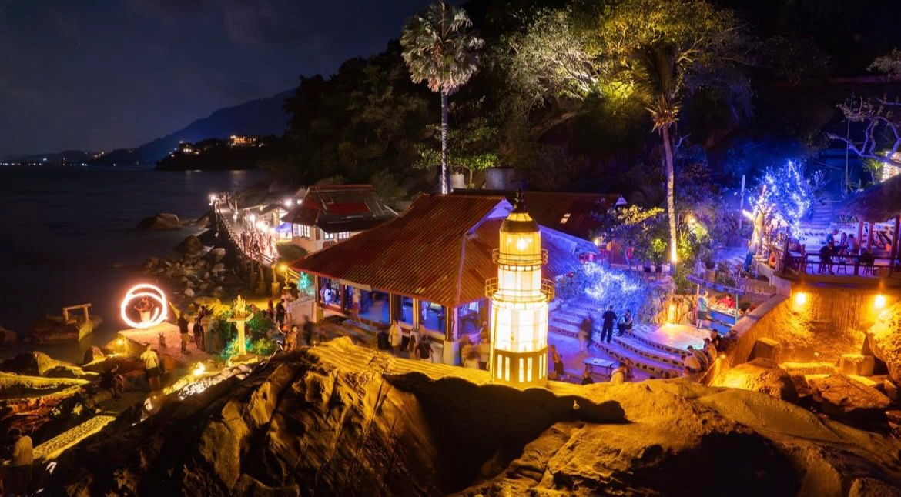
Lighthouse özellikle elektronik müziğiyle öne çıkıyor . Çoğu gece techno, house ve melodic setler çalan DJ’ler sahne alıyor. Burası büyük mekanlar gibi aşırı kalabalık veya gürültülü değil. Daha çok müziği gerçekten seven insanların geldiği, samimi ve enerjik bir ortam var.
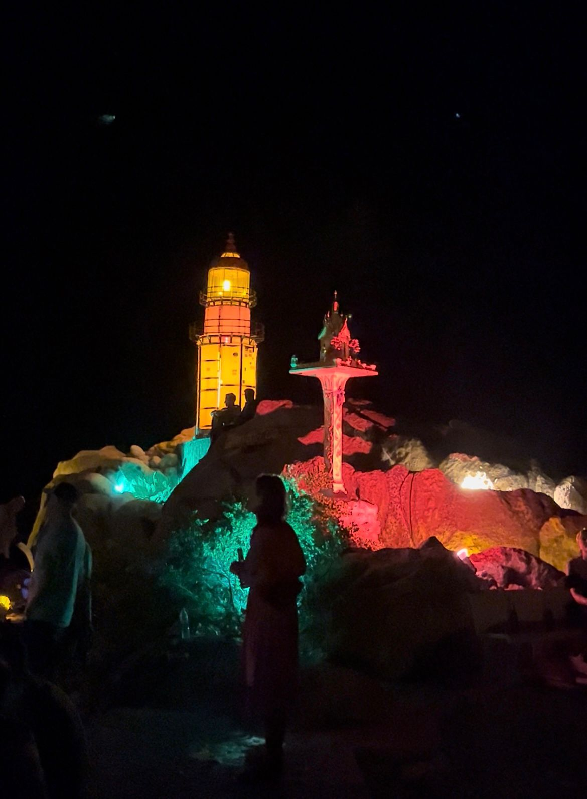
Mekanın en güzel taraflarından biri de konumu. Küçük bir koyun kenarında
olduğu için bir yanda müzik çalarken diğer yanda denizin sesini duyuyorsunuz. İsterseniz
içeride dans edebilir, isterseniz dışarı çıkıp sahilde biraz hava alabilir ya da yıldızların
altında oturabilirsiniz. Bence Lighthouse’u farklı yapan şeylerden biri de tam olarak bu.
Partiler genellikle haftanın belirli günlerinde oluyor. Özellikle Salı ve Cuma
geceleri oldukça hareketli. Mekan genellikle 21.00 civarında açılıyor
ve eğlence gün doğumuna kadar devam ediyor. Bir de küçük bir avantajı var:
22.00’den önce giriş genellikle ücretsiz, sonrasında ise kapıda yaklaşık
400 Baht giriş ücreti alınıyor.
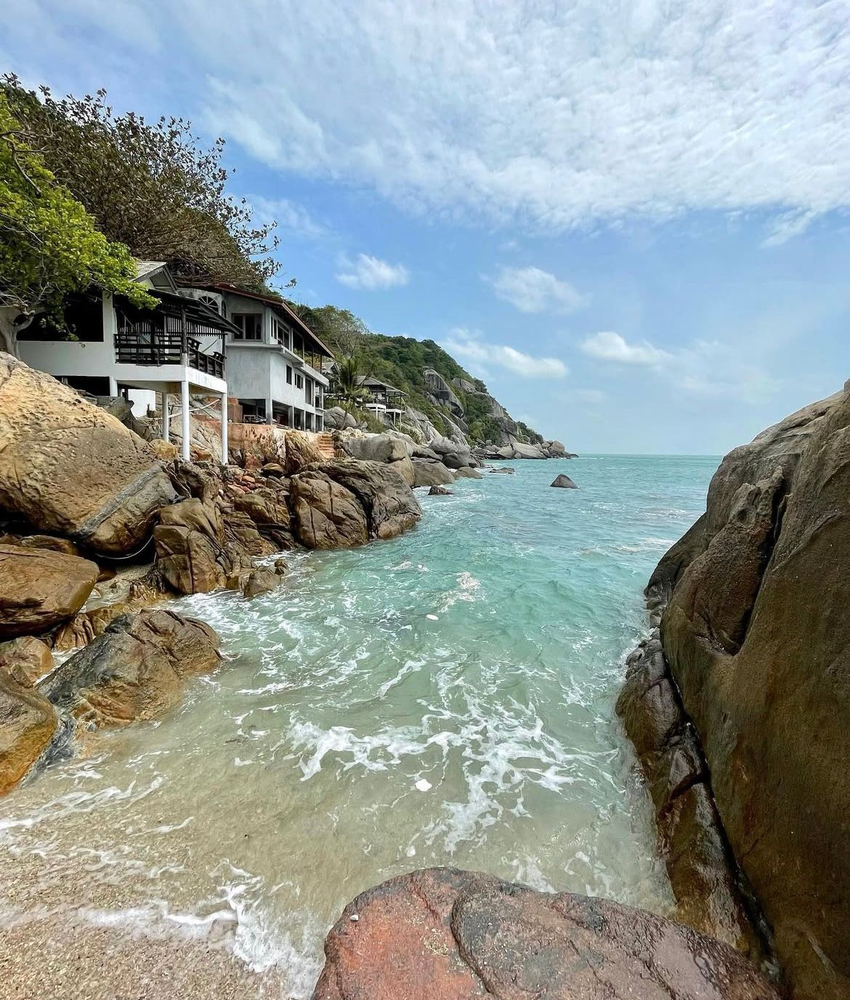
Bir diğer güzel tarafı ise burada bungalowlarda konaklama imkanının da olması. Lighthouse’un hemen
arkasında, denize bakan basit ama manzarası harika bungalowlarda kalabiliyorsunuz. Odaların çoğunda
denizi gören balkonlar ve hamaklar var. Sabah uyandığınızda direkt okyanus manzarasıyla güne
başlamak için güzel bir tercih olabilir. Konaklama seçeneklerine buradan göz atabilirsiniz:
www.booking.com
Eğer hem daha alternatif ve
kaliteli müzikli bir ortam arıyorsanız hem de biraz daha sakin, doğayla iç içe bir yerde kalmak
istiyorsanız Lighthouse kesinlikle listenizde olmalı.
Koh Phangan'da Yeme - İçme Tavsiyeleri
Adada hem yerel Tay mutfağını deneyebileceğiniz küçük sokak tezgahları hem de manzaraya karşı uzun
uzun vakit geçirebileceğiniz restoran ve kafeler bulunuyor. Özellikle gece pazarları, sahil
restoranları ve gün batımı barları adanın en keyifli yerleri.
Ben de Koh Phangan’da geçirdiğim süre boyunca farklı yerleri denemeye çalıştım ve en
sevdiklerimi bu listede topladım. Eğer adaya geliyorsanız, hem yerel lezzetleri tatmak hem de
güzel manzaralar eşliğinde keyifli vakit geçirmek için bu önerilere mutlaka göz atmanızı tavsiye
ederim.
1. Blue Ocean Coffee Restaurant
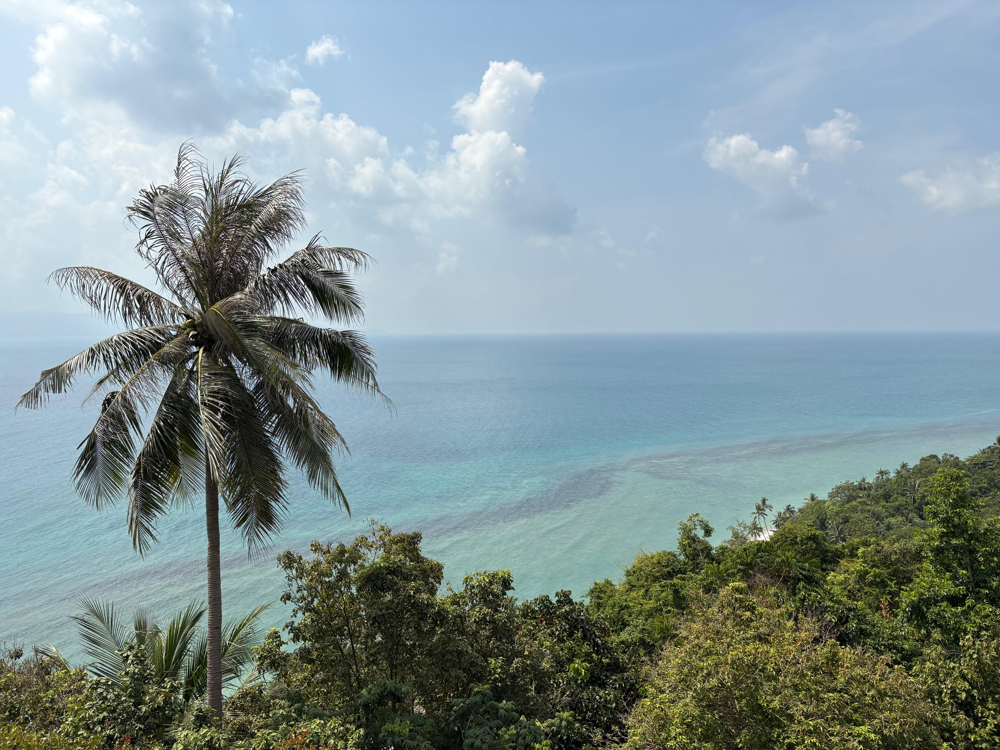
Koh Phangan’da güzel bir kahvaltı yapmak ve kahvenizi manzaraya karşı içmek
isterseniz Blue Ocean Coffee Restaurant’ı listenize ekleyebilirsiniz.
Deniz manzaralı konumuyla güne burada başlamak gerçekten çok keyifli.
Adada kaldığım süre boyunca çoğu kahvaltımı burada yaptım. Kahveleri
oldukça güzel, kahvaltı tabakları da hem doyurucu hem de lezzetli.
Masaya oturup denizi izlerken kahvenizi yudumlayıp şöyle bir “oh be” çekmelik bu yer, benim
Koh Phangan’daki favori kahvaltı mekanım oldu.
2. Cafe 2401 and Guesthouse
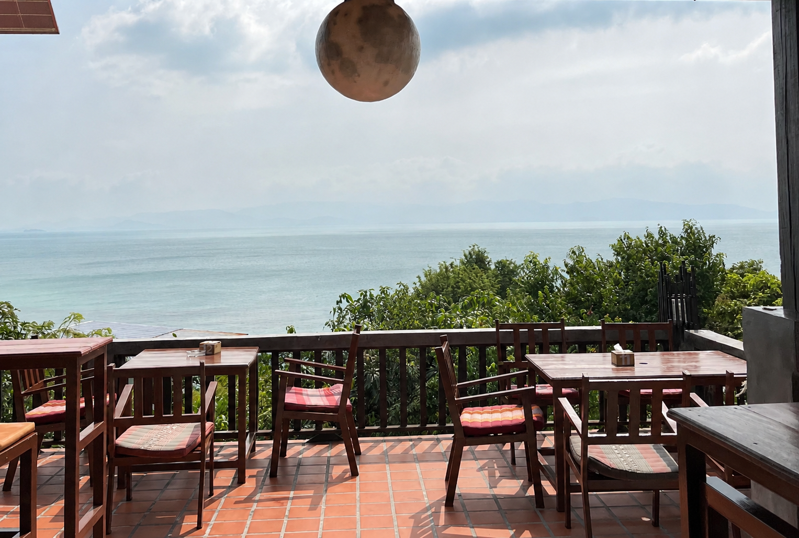
Koh Phangan’da uğradığım bir diğer yer de Cafe 2401 and Guesthouse. Küçük, samimi ve rahat bir mekan. Blue Ocean’a göre daha sakin ve fiyatları da daha uygun.
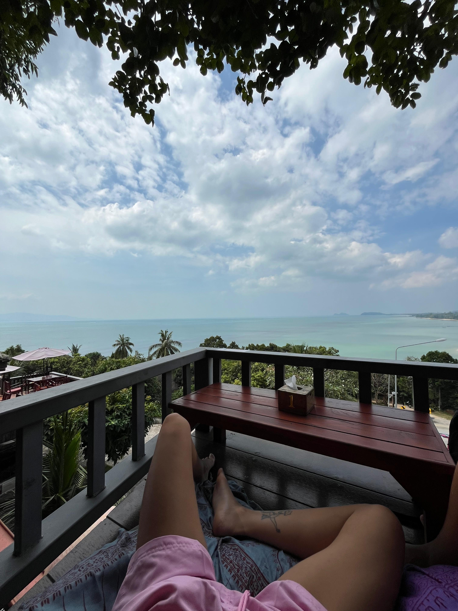
Burada birkaç kez kahve içip bir şeyler atıştırdım. Sandviç ve patates kızartması benim en çok yediklerim oldu ama açıkçası buraya tekrar tekrar gelmemin sebebi yemeklerden çok ortamıydı. Sabah saatlerinde sakindi ve manzaraya karşı oturup uzun uzun vakit geçirmek keyifli. Bir de interneti gayet iyi çekiyor. Bilgisayarınızı alıp birkaç saat çalışabilir, arada kahvenizi içip manzarayı izleyebilirsiniz.
3. Common Grounds Coffee
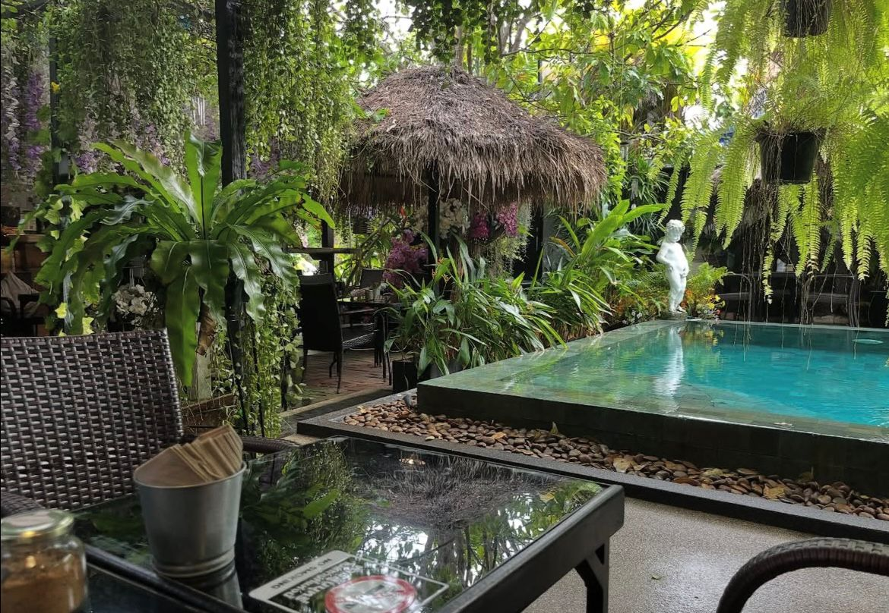
Koh Phangan’da kahve içmek ve biraz soluklanmak için sevdiğim bir diğer yer de Common Grounds Coffee oldu. Burası yemyeşil bitkilerle çevrili oldukça ferah ve sakin bir atmosfere sahip. Bahçenin içinde küçük bir havuz ve etrafında oturma alanları bulunuyor.
Kahveleri gerçekten güzel. Yanında sandviç, salata, tatlı ve taze meyve suyu gibi
seçenekler de var. Kahvaltı için de birkaç güzel alternatif bulunuyor ve porsiyonlar
gayet doyurucu.
Ben buraya bazen kahvaltı, bazen de sadece kahve içmek için uğradım. Adada birçok yere
giderken yolumun üzerinde kaldığı için konumu da oldukça iyi. Ortamı rahat;
bahçede oturabilir ya da havuz kenarında kahvenizi içebilirsiniz. İnternet ve
çalışma alanları da olduğu için bilgisayarını alıp çalışmak isteyenler için de güzel
bir yer.
Mekan her gün 08.00–17.00 arasında açık. Özellikle sabah kahvesi veya
öğle saatlerinde bir şeyler atıştırmak için uğranabilecek güzel bir yer.
4. Bubba's Coffee
Koh Phangan’da kahvaltı ve kahve için en sevilen yerlerden biri kesinlikle Bubba’s
Coffee. Ada
genelinde oldukça bilinen bir yer ve özellikle kahvaltı saatlerinde ciddi bir hareketlilik oluyor.
Ben de buraya bir sabah kahvaltı için uğradım ve çok beğendim.
Kahvaltı menüsü oldukça zengin ve tabaklar gerçekten dolu dolu geliyor. Özellikle avokadolu
kahvaltılar, yumurtalı tabaklar ve brunch seçenekleri
oldukça başarılı. Kahve konusunda da oldukça
iddialılar; çekirdekler genellikle Tayland’ın kuzeyindeki Chiang Mai ve Chiang Rai bölgelerinden
geliyormuş. Bu yüzden kahveler hem taze hem de gerçekten çok lezzetli.
Mekan genellikle 07.00 – 17.00 saatleri arasında açık, bu yüzden özellikle kahvaltı veya brunch için oldukça ideal. Fiyatlar da adadaki çoğu iyi kahvaltı mekanında olduğu gibi orta seviyede diyebilirim; ne çok ucuz ne de pahalı. Ama gelen tabakların doluluğunu ve lezzetini düşününce kesinlikle karşılığını verdiğini söyleyebilirim.
Ortamı da oldukça ferah ve rahat. Uzun uzun kahvaltı yapıp sohbet edebileceğiniz, kahvenizi içip biraz vakit geçirebileceğiniz keyifli bir atmosferi var. Zaten bu yüzden çoğu zaman oldukça kalabalık oluyor. Eğer Koh Phangan’da güzel bir kahvaltı ve iyi bir kahve arıyorsanız Bubba’s Coffee kesinlikle listenizde olması gereken yerlerden biri.
5. Top Rock Bar
Koh Phangan’da gün batımı için keşfettiğim yerlerden biri de Top Rock Bar.
Aracınızı park ettikten sonra biraz merdiven çıkmanız gerekiyor. Yukarı
vardığınızda ise sizi güzel bir deniz ve ada manzarası karşılıyor. Tepede olduğu için
palmiyelerle çevrili kıyıyı yukarıdan görebiliyorsunuz.
Mekan oldukça sakin ve rahat. Bir şeyler içip manzaraya karşı oturmak için güzel bir yer.
Özellikle gün batımına doğru biraz kalabalıklaşabiliyor, bu yüzden güzel bir yer kapmak
istiyorsanız erken gitmenizi öneririm.
11.00–00.00 saatleri arasında açık. Yemek ve içecek seçenekleri var,
fiyatlar da genel olarak uygun.
Benim en sık gittiğim ve en çok keyif aldığım yerler bu şekildeydi. Ama Koh Phangan’da alternatif olarak değerlendirebileceğiniz daha birçok güzel mekan var. Buralara da göz atabilirsiniz:
- ☕️🍰 Rong Cafe
- 🍦 Kilo Frozen Yogurt
- ☕️🍛 Kontainer Coffee & Restaurant
- ☕️🥙 Walu Ban Tai Breakfast & Cafe
- ☕️🍰 Hundred Islands Coffee Bar
- ☕️🍰 You and Me
- 🥭🍚 Mama Noi. Mango Sticky Rice
- 🍹 Lazy Rock
- 🍹 420 Club Phangan
- 🍹 Mae Haad Tree House Bar
Keşfet, Ritmi Yakala, Gün Batımını İzle: Koh Phangan
Koh Phangan, Tayland’ın en özgür ruhlu adalarından biri. Çoğu kişi burayı
sadece Full Moon Party ile tanıyor ama ada bundan çok daha fazlasına
sahip. Masmavi denizi, palmiyelerle çevrili plajları, sakin koyları ve gün batımında
bambaşka bir manzaraya dönüşen tepeleriyle keşfetmesi gerçekten keyifli bir yer.
Bir gününüzü gizli bir plajı keşfederek, başka bir gününüzü motorla adayı gezerek
geçirebilirsiniz. Akşam olduğunda ise gece pazarına uğrayabilir, güzel bir barda
gün batımını izleyebilir ya da isterseniz sabaha kadar süren partilere katılabilirsiniz.
Daha sakin bir şeyler arıyorsanız yoga ve wellness merkezleri de adanın başka bir
tarafını gösteriyor.
Bence Koh Phangan’ın en güzel tarafı da tam olarak bu. Ne yapmak
istediğinize tamamen o gün karar verebiliyorsunuz. Bir gün denizin içinde, ertesi gün
ormanın içinde, başka bir akşam ise müziğin arasında bulabiliyorsunuz kendinizi.
Ada bir süre sonra kendi ritmini size de geçiriyor ve ayrılırken biraz daha kalmış
olmayı istiyorsunuz.
Peki sen Koh Phangan'da en çok nereyi görmek isterdin? Aklında olan bir yer, merak
ettiğin bir şey ya da kendi ada deneyimin varsa aşağıya yaz. Duymak isterim!
Yorum Yaz
E-posta adresiniz yayımlanmayacaktır. Gerekli alanlar * ile işaretlenmiştir.